arXiv 2606.02800 · cs.CV · v4 2026 年 6 月 23 日 · NVIDIA 技术报告 · 中文精读
Cosmos 3: Omnimodal World Models for Physical AI
作者署名为 NVIDIA（arXiv 列出 294 位作者），附录 G 按组列出贡献者。
关于这份精读。这篇报告在 arXiv 上登记的许可是 CC BY 4.0，PDF 上没有和它矛盾的版权声明（页眉只有日期 2026-6-24 和“NVIDIA”署名）。CC BY 本来就允许转载原图；这一批论文也由站点作者决定一律放原图。下面的图从 arXiv PDF v4 裁切，只做了裁切、缩放和格式转换，没有改内容。37 张图里放了 23 张；排行榜网页截图（图 18、19、26、27）、纯示意的流程框图（图 11、13、15）、JSON 提示示例（图 30）、合成数据的样例帧（图 32 到 35）和两张视频帧对比（图 21、23）只写文字说明，并链接到 PDF 对应页。
按原文顺序覆盖第 1 到 8 节和附录 A 到 G，小节编号和原文一致。正文每节先给结论；第 5 节基础设施和长附录多数放在折叠块里。公式按原文编号，表格数字照录原文。“读者注”是我核算或对照时发现的，不属于论文内容，页尾有汇总。
代码。论文给的仓库 NVIDIA/cosmos 只是入口页（README、cookbook、基准文档），读的是提交 5401062（2026-11-11）。训练和推理代码在它指向的 NVIDIA/cosmos-framework，读的是提交 e40831f（2026-11-16）。两个仓库都是 OpenMDW-1.1 许可（Linux 基金会的模型许可，允许任意使用和再分发，需保留许可文本和版权声明）。只读，没有运行。参数量用 HF 上 safetensors 文件的头部（只下载头部，不下载权重）逐张量相加。
本页的位置。用户在复现的 OpenWAM 支持 Cosmos3-Edge 作为视频骨干，所以页末有一节 和 OpenWAM 的关系。前一代 Cosmos-Predict2.5 见 Cosmos-Predict2.5 精读，同批还有 Cosmos WFM、Cosmos-Reason1、Cosmos-Transfer1、Cosmos Policy、Cosmos 交互式模拟 和 GR00T。
Cosmos 3 是 NVIDIA Cosmos 系列的第三代。前两代把理解（Cosmos-Reason）、生成（Cosmos-Predict）、可控生成（Cosmos-Transfer）、策略（Cosmos Policy）分成不同模型；Cosmos 3 把它们并进一个网络：语言、图像、视频、音频、动作五种模态放在同一条 token 序列里，前半段自回归、后半段扩散，由一个两套参数的 Mixture-of-Transformers（MoT）处理。
读完我认为最值得记住的三点：
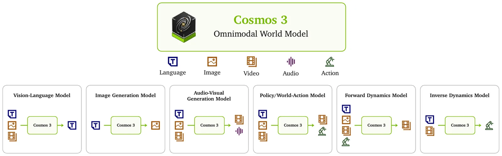
结论：作者认为理解和生成不该分开建模，并用一个“收拾餐桌的家用机器人”说明现状：要 VLM 定位和规划、VLA 或 WAM 出动作、再一个世界模型预测后果，三个模型拼起来又慢又浪费。Cosmos 3 想用一个模型覆盖这些角色，并且换任务不改结构。
报告给出三个用途（图 2）：近期是合成训练数据；中期是在共享模型上做任务和实体专门化（中训练模型作为更好的起点）；长期是生成训练环境。代码、权重、合成数据集和评测基准以 OpenMDW-1.1 发布。
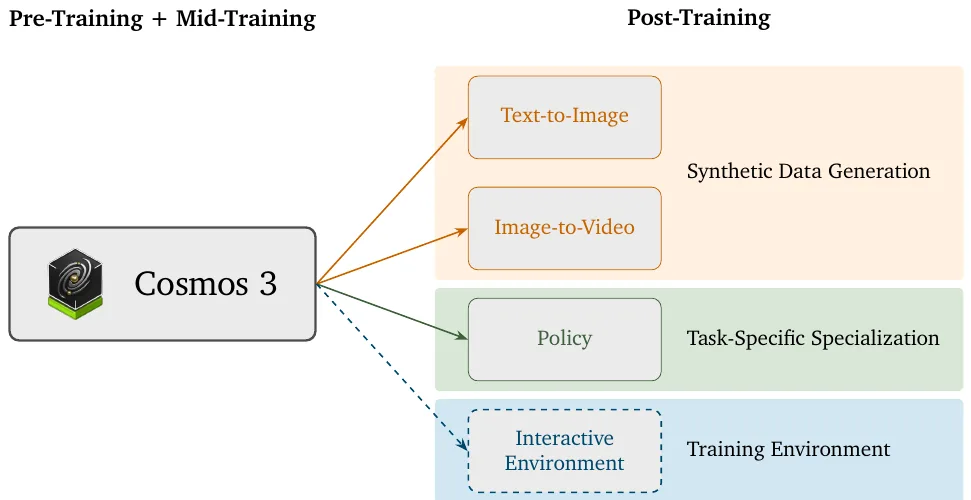
表 1 是全文结果的摘要。带 * 的是后训练版本，† 是闭源模型；空格表示该模型没有这项能力。
| 模型 | 理解·通用 | 机器人 | 智能基建 | 驾驶 | 文生图 | 文生视频 | 图生视频 | 音频 | FD·机器人 | 策略·机器人 |
|---|---|---|---|---|---|---|---|---|---|---|
| Cosmos3-Super | 73.7 | 57.8 | 62.6 | 79.3 | 91.36* | 80.0 | 82.8 | 7.31 | 26.0* | — |
| Cosmos3-Nano | 69.6 | 55.1 | 61.0 | 76.0 | 84.61 | 79.4 | 82.7 | 7.34 | 25.5* | 39.7* |
| Gemini 3.1 Pro† | 77.5 | 58.2 | 58.6 | 47.2 | ||||||
| Qwen3-VL-32B | 72.8 | 52.6 | 56.1 | 40.7 | ||||||
| Qwen3-VL-8B | 68.9 | 48.5 | 52.7 | 46.4 | ||||||
| Gemma-4-31B | 69.8 | 51.0 | 51.3 | 36.6 | ||||||
| Gemma-4-E4B | 53.1 | 39.3 | 29.4 | 26.0 | ||||||
| Gemini 3 Pro Image† | 90.85 | |||||||||
| Qwen-Image-2512 | 84.25 | |||||||||
| Veo-3.1† | 79.1 | 82.6 | 7.45 | |||||||
| Wan2.2-A14B | 78.0 | 81.3 | ||||||||
| Ctrl-World | 23.0 | |||||||||
| π0.5 | 28.1 |
都能在后面找到出处：理解四列 = 表 10 的四个组平均；文生图 = 表 11 UniGenBench “All”（Super 用的是后训练版 91.36，Nano 用基础版 84.61；Gemini 3 Pro Image 写 90.85，但表 11 里是 90.69，对不上）；文生视频 / 图生视频 = 表 12 PAIBench-G Overall；音频 = 表 15 AVQ；FD·机器人 = 表 18 DROID 正向动力学 PSNR（26.04、25.52、Ctrl-World 22.99，四舍五入）；策略 = 表 19 RoboLab “Overall · Specific”（39.7、π0.5 28.1）。只有 Gemini 3 Pro Image 这一格不一致。
结论：各模态先用自己的编码器变成向量，再按固定规则排成一条序列：自回归段在前、扩散段在后；扩散段内“干净的条件在前、带噪的目标在后”，模态按视觉、音频、动作排。网络是双塔 MoT，位置编码是改过的 3D MRoPE，时间轴按真实秒数对齐。
每个非语言模态的 token 进入主干前，都加一个可学习的模态嵌入向量，让共享参数分得清模态。
2.1.1 图像和视频。两套编码器。理解用 ViT（patch 16 × 16，后接两层 MLP 把 2 × 2 个 token 合成一个），沿用 Qwen3-VL 的 DeepStack 多层特征聚合和“文本时间戳与视频帧交错”；ViT 和主干一起训练。生成用 Wan2.2-TI2V-5B 的视频 VAE：时间 4 倍、空间 16 × 16 压缩，再 2 × 2 合并 patch，合计每个 token 覆盖 4 帧 × 32 × 32 像素，再用一个线性层投到隐藏维；VAE 冻结。
2.1.2 音频。音频 VAE 结构取自 Lee 等（2025b）。48 kHz 立体声，hop 1920 个采样点，每秒 25 个 token；冻结，线性层投影。
2.1.3 动作。覆盖四类来源：自动驾驶、相机运动、机器人、第一人称人体（头和双手）。各自的原生控制量（关节轨迹、方向盘、身体姿态、相机变换）统一成一个接口。
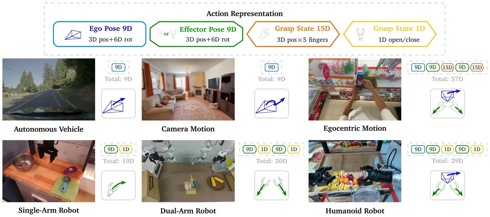
动作表示。动作 \(a_t\) 定义为从状态 \(v_{t-1}\) 到 \(v_t\) 的变化。自我位姿和末端位姿用状态差得到的伪动作：相邻两个 SE(3) 位姿的相对变换 \(\Delta T_t=T_{t-1}^{-1}T_t\)，旋转用 6D 表示（Zhou 等 2019），坐标系按 OpenCV 习惯（z 轴沿手指 / 夹爪，x 轴向右）。这样就不用关心 PID 参数之类的控制器细节。抓取状态不取差值，直接给 t 时刻的状态。相机和自动驾驶只有自我位姿；第一人称数据用头部相机位姿差、手腕位姿差、手腕坐标系下的指尖位置；机器人数据用头部相机位姿差、法兰位姿差、连续的夹爪开合值。
动作 token 化。每个实体域 \(k\in\{1,\dots,K\}\) 一对自己的输入、输出线性层，主干共享：
\(x\) 是归一化后的动作向量，\(z\in\mathbb R^{d_{\rm model}}\) 是动作 token。投影层从零初始化（随机初始化），和主干一起训练。预测出的 6D 旋转用 SVD 投回 3 × 3 旋转矩阵。
和式 (1)(2) 一致。cosmos_framework/model/generator/mot/domain_aware_linear.py 的 DomainAwareLinear（注释说取自 X-VLA）把每个域的权重和偏置存成 nn.Embedding(num_domains, out×in)，按样本的域编号取出；cosmos3_vfm_network.py 第 423–427 行建 action2llm 和 llm2action。配置是 num_embodiment_domains=32、max_action_dim=64（短于 64 维的动作补零）。HF 文件头核对：Edge 的 action_proj_in 有 4,259,840 个参数 = 32 × (64 × 2048 + 2048)，action_proj_out 4,196,352 = 32 × (2048 × 64 + 64)；Nano、Super 同样按 4096、5120 宽算得上。
域编号表在 data/generator/action/utils/domain_utils.py：例如 av 1、camera_pose 2、hand_pose 3、pusht 4、libero 5、droid_lerobot 8、agibotworld 15、robotwin 17、robocasa 30。原生维度表里 droid 10、agibotworld 29、webhumanaction_body 57，正好是图 3 的单臂 10D、人形 29D、第一人称 57D。有一处我没看懂："embodiment_b_20260828": 32，而默认只有 32 个域（编号 0–31），除非对应配方把域数调大，否则会越界；未核实。
2.2.1 排列。序列 = 自回归（AR）子序列 + 扩散（DM）子序列。AR 段放文本和 ViT 编码的图像 / 视频，走理解参数；DM 段放 VAE 编码的图像 / 视频、音频、动作，走生成参数，两段在每层通过联合注意力交互。三条规则：AR 在 DM 前；DM 里每种模态干净条件在带噪目标前；条件段和目标段内部都按视觉、音频、动作排。
2.2.2 生成模式。干净的视觉、音频、动作记为 \(v,s,a\)，带噪的加波浪号。\(S_{\rm AR}\triangleq[l_1,\dots,l_n,\langle{\rm EOS}\rangle,\langle{\rm BOG}\rangle]\) 是所有模式共用的前缀（BOG 是“开始生成”特殊 token）。
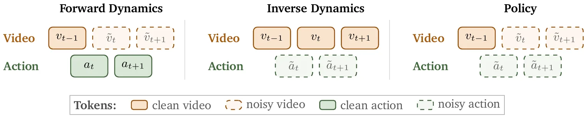
结论：和 BAGEL（Deng 等 2025）的层结构类似，但训练策略、位置编码和能力不同。每层有两条通路，每条都是完整的 Transformer 层（自己的 LayerNorm、注意力投影、FFN），都从预训练 VLM 初始化；AR 段走理解塔（Reasoner），DM 段走生成塔（Generator），两者只在注意力里相遇。
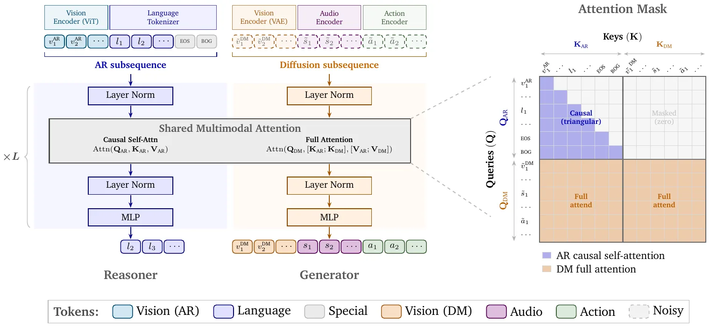
2.3.2 双流联合注意力。
AR token 永远不受 DM token 影响，所以理解塔保持原 VLM 的文本生成能力；DM token 能看到文本提示和所有条件、目标 token。一个直接后果（5.3.1 节用到）：扩散采样的每一步，AR 段的结果都一样，只需算一次缓存起来。
结论：以 Qwen3-VL 的 3D MRoPE（每个注意力头的维度分成时间、高、宽三段）为底，改了三处：DM 段每个视觉片段的 t、h、w 从 0 重新计数；AR 段和 DM 段之间插 15,000 的时间间隔；时间步长按真实时间缩放，让不同帧率的视频、音频、动作对齐到同一条物理时间轴。
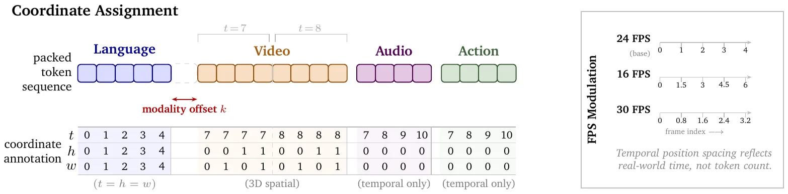
2.4.1 位置编号。AR 段完全照 Qwen3-VL（为了兼容理解能力）。DM 段：视频 token 的 t 随隐帧递增，h、w 在每帧里从 0 平铺；图像当单帧视频；每个视觉片段从 0 重新开始，所以 t、h、w 是片段内的绝对坐标。音频 token 每个 hop 时间加一，动作 token 每个采样步加一，空间坐标为 0。
AR 和 DM 之间的间隔。如果 DM 直接接在最后一个文本 token 的时间位置后面，生成视频的开头几帧会过饱和、出现棋盘格伪影，Super 上尤其明显。作者猜是最后的文本 token 和第一帧视觉 token 的时间编码几乎一样。做法（受 Cao 等 2025 启发）：在两段之间插一个固定的时间间隔，所有模型都取 15,000。
2.4.2 绝对时间调制。先定义每秒的时间步数 TPS：视频是帧率除以 VAE 的时间压缩 4；音频是 48000 / 1920 = 25；动作就是采样频率。以 \({\rm TPS}_{\rm base}=24/4=6\) 为单位长度（24 FPS 是训练数据里最常见的帧率），每前进一步时间坐标增加
30 FPS 视频：TPS = 7.5，δt = 6 / 7.5 = 0.8；16 FPS：TPS = 4，δt = 1.5，正是图 6 右边的数。音频 TPS 是 48000 / 1920 = 25 整（正文写“≈ 25”，其实是整数），δt = 0.24；DROID 策略的 15 Hz 动作 δt = 0.4，LIBERO 的 20 Hz 动作 δt = 0.3。代码一致：三个尺寸的配置都是 base_fps=24、enable_fps_modulation=True、unified_3d_mrope_temporal_modality_margin=15000（configs/base/experiment/sft/models/*_model_config.py）；OpenWAM 移植的 text_pack.py 里写成 scaled_t = (帧号 + 起点) / tps × base_tps + temporal_offset，temporal_offset = 文本长度 + 15000。代码还有一个论文没提的开关 sound_base_temporal_compression_factor：默认 None 时音频按 base_fps 推进，设成 4 才和视觉放在同一隐帧网格上。
结论：Edge 4B（自训的 2B 稠密 LLM）、Nano 16B（Qwen3-VL-8B）、Super 64B（Qwen3-VL-32B）。“4B / 16B / 64B”大致等于“两倍稠密 LLM”。报告发布时只放出 Nano 和 Super，Edge 后来（README 记 2026 年 7 月）发布。Edge 的 LLM 用 Megatron 从头训，结构大体照 Qwen3-1.7B，但去掉 QK 归一化、FFN 激活改成 ReLU²（附录 D）。
| 表 2 | LLM 层数 | 隐藏维 | 注意力头 | KV 头 | 头维 | FFN 维 |
|---|---|---|---|---|---|---|
| Cosmos3-Edge | 28 | 2,048 | 16 | 8 | 128 | 9,216 |
| Cosmos3-Nano | 36 | 4,096 | 32 | 8 | 128 | 12,288 |
| Cosmos3-Super | 64 | 5,120 | 64 | 8 | 128 | 25,600 |
我读了 HF 上三个仓库每个 safetensors 分片的头部，按张量形状相加：
| transformer（两塔） | ViT | 合计 | HF 页面显示 | 单塔层参数（我算） | 稠密 LLM（单塔 + 嵌入 + lm_head） | |
|---|---|---|---|---|---|---|
| Edge | 3,369,657,024 | 489,342,704 | 3,858,999,728 | 3.86B | 1.409B | 1.946B |
| Nano | 15,173,669,120 | 576,388,336 | 15,750,057,456 | 15.75B | 6.946B | 8.19B |
| Super | 64,019,736,832 | 595,266,800 | 64,615,003,632 | 64.6B | 31.206B | 32.76B |
“合计”和 HF API 给的参数总数一个不差，说明“4B / 16B / 64B”= 两塔 + ViT，不含冻结的 Wan2.2 VAE（另 704,688,668 个参数，和 Wan 页读者注 20 一致）。单塔层参数按表 2 算：Edge 每层注意力 2048 × (2048 + 1024 + 1024 + 2048) = 12.58M，FFN 是不带门控的 ReLU²，2 × 2048 × 9216 = 37.75M，× 28 = 1.409B，和文件头里两条通路的 to_q…mlp 张量总和逐项相同；Nano、Super 用 SwiGLU（3 个矩阵）。所以 Edge 的“2B 稠密”是 1.41B 层 + 268M 词嵌入 + 268M lm_head（词表 131,072，Nemotron-3 分词器）。另一个细节：Edge 文件里有 k_norm_und_for_gen（生成塔读理解塔 K 时额外归一化），没有音频投影层，配置 sound_gen=False，原生分辨率 480p，所以 Edge 不能生成音频，论文没明说。
结论：理解塔用图文、视频文本对（约 2,420 万样本）；生成塔用图像、视频、音频、动作的大规模数据，按阶段逐步加模态（图 8）。两条课程都是“先广后专”。
预训练 2,200 万，SFT 220 万（表 3）。预训练以图文和纯文本为主；SFT 转向物理 AI，视频文本占一半。
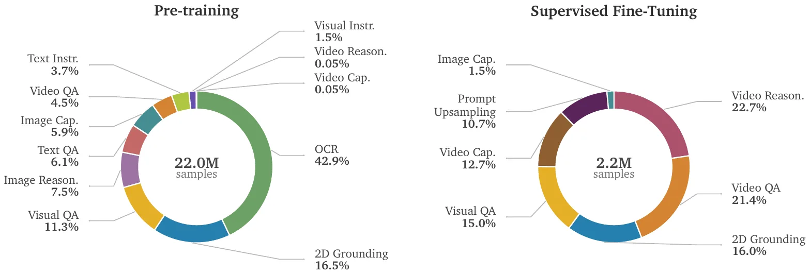
| 表 3 · 模态 | 预训练 | SFT |
|---|---|---|
| 图文（媒体数） | 18,814,952 | 1,051,513 |
| 视频文本（媒体数） | 1,016,299 | 1,079,200 |
| 纯文本（对话数） | 2,170,762 | 40,960 |
| 合计 | 22,002,013 | 2,171,673 |
3.1.1 预训练数据。1,970 万条从 Nemotron Nano 2 数据集合里挑，另加 230 万条补数学、视频、空间定位和指令遵循。两步清洗：
最终构成：OCR 944 万（42.9%）、2D 定位 362 万（16.5%）、视觉问答 248 万（11.3%）、图像推理 166 万（7.5%）、文本问答 135 万、图像描述 130 万、视频问答 99 万、文本指令 82 万、视觉指令 34 万、视频描述和视频推理各约 1 万。
表 3 两列的和都对：18,814,952 + 1,016,299 + 2,170,762 = 22,002,013；1,051,513 + 1,079,200 + 40,960 = 2,171,673。SFT 里视频文本占 1,079,200 / 2,171,673 = 49.7%，就是正文说的“50%”。预训练分项 9.44 + 3.62 + 2.48 + 1.66 + 1.35 + 1.30 + 0.99 + 0.82 + 0.34 + 0.01 + 0.01 = 22.02（百万），和 2,200 万一致；百分比如 9.44 / 22.0 = 42.9%。
3.1.2 SFT 数据（共 220 万，按能力分组，细节点开看）。
结论：预训练只有图像、视频、音频；中训练加入动作、视频迁移和合成数据；后训练各任务分开做，得到 Cosmos3-Super-Text2Image、Cosmos3-Super-Image2Video、Cosmos3-Nano-Policy-DROID，结构和中训练模型完全相同。
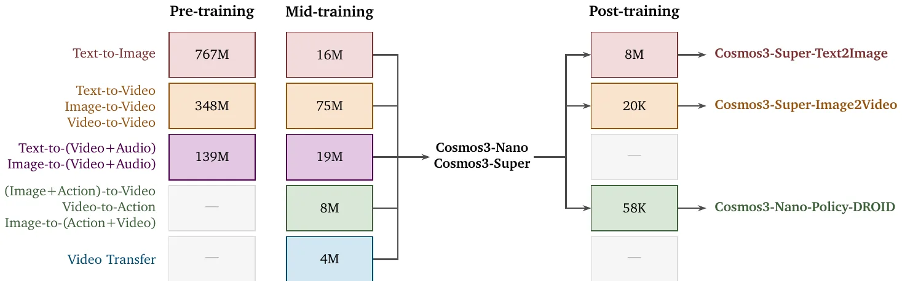
3.2.1 图像和视频。五步：收集和预处理、嵌入和去重、分类和基础过滤、标注、按分辨率和时长分片。
3.2.2 音频。网页视频的音频常是旁白和配乐，不是画面里的事件发出的。预训练用全部 1.389 亿段带音轨的片段（30 秒以下的 6,250 万段用 Qwen3-Omni-Captioner 写音频描述）。中训练筛出 1,880 万段：1,280 万段非语音、600 万段口型同步的语音。
3.2.3 动作。中训练才加入“文本-视频-动作”配对数据，学三个方向：给动作预测未来、给轨迹反推动作、两者一起生成。共 840 万个回合、6.13 万小时（图 9）。
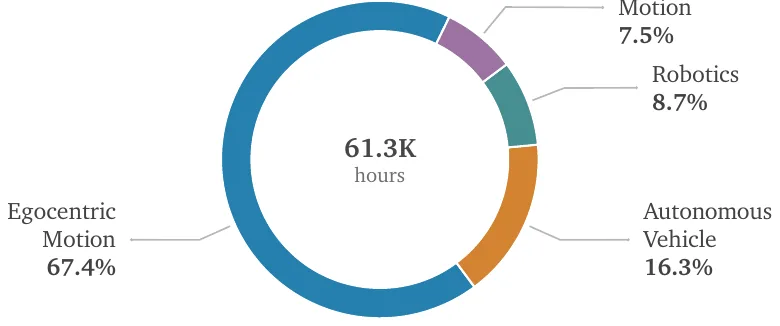
| 表 4 · 实体 | 数据来源 | 任务 | 回合 | 小时 |
|---|---|---|---|---|
| AgiBot | AgiBot World | 338 | 239.4K | 4.37K |
| Franka Panda | RoboMIND；DROID | 67.5K | 76.3K | 442 |
| Google Robot | RT-1（Fractal） | 599 | 87.2K | 351 |
| WidowX-250 | BridgeData V2 | 21.8K | 50.4K | 100.1 |
| UMI | 六个 UMI 数据集 | 43 | 38.3K | 67 |
| UR | RoboMIND | 114 | 25.0K | 35 |
| 合计 | 90.4K | 516.7K | 5.36K |
四类相加 41.3 + 10.0 + 5.36 + 4.6 = 61.26K 小时，和 61.3K 一致；占比 41.3 / 61.3 = 67.4%、10.0 / 61.3 = 16.3%、5.36 / 61.3 = 8.7%、4.6 / 61.3 = 7.5%，全对。表 4 小时数加起来 4.37K + 442 + 351 + 100.1 + 67 + 35 = 5,365，回合 516.6K，任务 67.5K + 21.8K + 338 + 599 + 43 + 114 = 90.4K，都在四舍五入范围内。注意 DROID 在中训练里只占 Franka 一行的一部分（DROID 本身 7.6 万回合 350 小时，4.2.5 节），这一行合计才 442 小时。
处理：每个来源按 2.1.3 节的统一格式转换，再按维度算归一化系数，把各通道缩到大约 [−1, 1]；多视角拼成一张画布，布局写进元数据（附录 B.5 图 30）；不删静止片段，而是记下静止帧数，采样时再平衡。
结论：两大阶段。先训理解塔（预训练 → SFT）；因为两塔结构相同，训好的理解塔权重用来初始化生成塔，然后冻结理解塔，生成塔按 预训练 → 中训练 → 后训练 走。
4.1.1 预训练。从“语言模型 + ViT + 多模态投影”开始：Edge 用自训模型（附录 D），Nano 用 Qwen3-VL-8B，Super 用 Qwen3-VL-32B。不做“只训投影层”的对齐阶段，一开始就全部一起训。下一 token 预测，整个混合数据训 2 轮，不放回采样；序列最长 16k token，单样本图像最多 2,048、视频最多 8,192 个 token。按平方根归一化每个 token 的损失权重，平衡长短样本。AdamW，LLM 和投影层峰值学习率 5e-5，ViT 5e-6，10% 线性预热后余弦降到 0.1 倍；β = (0.9, 0.999)，权重衰减 0.05，梯度裁剪 1.0。
4.1.2 SFT。每个数据集按重要性分配固定的采样预算；预训练数据以 1 : 4 的比例混入，再加 80 万条指令遵循数据防止遗忘。8,200 步，全局 batch 512；学习率 LLM 1e-5、ViT 1e-6，1,000 步预热后余弦降到 0.1 倍；β = (0.9, 0.95)，权重衰减 0.1，裁剪 1.0。
训练目标。所有模态都用整流流匹配：\(x_\sigma=\sigma\epsilon+(1-\sigma)x_0\)，网络 \(v_\theta(x_\sigma,\sigma,c)\) 预测常速度 \(v^*=\epsilon-x_0\)，用带掩码的 MSE（干净的条件 token 不计损失）。每种模态独立抽噪声水平；图像、音频、动作用 logit-normal，视频用 Waver 的 mode sampling（作者说质量更好）。再做 shift 重参数化 \(\sigma=s\bar t/(1+(s-1)\bar t)\)，\(\bar t=1-t\)，\(s\ge1\) 时偏向高噪声。
联合训练文生图、文生（视频 + 音频）、图生（视频 + 音频）、视频续写（+ 音频）。
| 表 5 · 分辨率 | FPS | 帧数 | 16:9 | 4:3 | 1:1 | 3:4 | 9:16 |
|---|---|---|---|---|---|---|---|
| 256p | 10–30 | 5–400 | (320, 192) | (320, 256) | (256, 256) | (256, 320) | (192, 320) |
| 480p | 10–30 | 5–400 | (832, 480) | (736, 544) | (640, 640) | (544, 736) | (480, 832) |
| 720p | 10–30 | 5–300 | (1280, 720) | (1104, 832) | (960, 960) | (832, 1104) | (720, 1280) |
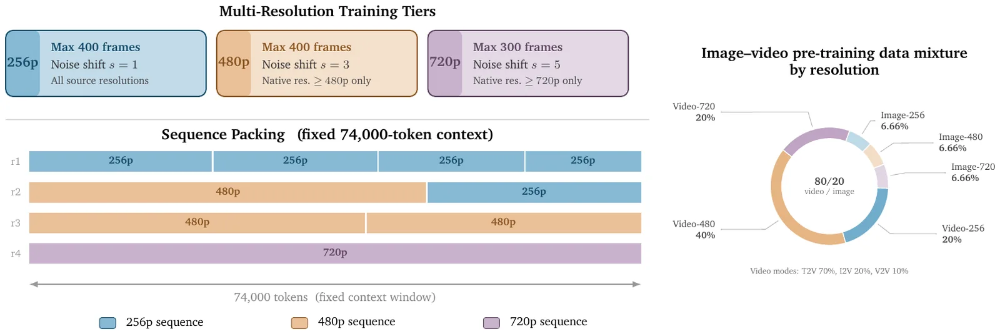
正文的 20%、56%、16%、8% = 图像 20% 加上视频 80% × (70%, 20%, 10%)，和图 10 右下角的小字一致。但图 10 的图注写“在三种条件模式里均匀采样”，均匀的话应是 26.7% 各一份。以正文和图为准，图注是笔误的可能性大。另外配比 1 : 1 : 2 : 1 换成百分比是 20 / 20 / 40 / 20，图里图像三档各 6.66%，合计 20%，也对得上。
两个目的：领域专门化（1,560 万张精选图、7,470 万段机器人、驾驶、人类活动、物理和合成视频）和多模态集成（加入动作和视频迁移）。保持预训练的“干净前缀 + 带噪目标”格式，动作、音频、控制、视频 token 共用时间坐标。
| 表 6 · 数据流 | 模式 / 条件 | 占比 |
|---|---|---|
| 图像 | T2I | 10% |
| 视频 | T2V、I2V、V2V | 32% |
| 视频 + 音频 | T2(V+A)、I2(V+A)、V2(V+A) | 8% |
| 动作 | 正向动力学、逆向动力学、策略 | 25% |
| 通用迁移 | 边缘、模糊、深度、分割 | 20% |
| 驾驶迁移 | 世界场景图 | 5% |
shift 提高到 256p 3、480p 5、720p 10。动作沿用视觉的噪声日程；总损失是各模态速度 MSE 的加权和，动作损失乘 10（归一化动作的逐元素 MSE 偏小）。优化同预训练，损失缩放 10，LambdaLinear 日程（起始系数 0.4，周期 10 万步）。Nano 2.4T token / 1,024 张 GB200，Super 1.9T token / 2,048 张。
论文有两套训练 shift：预训练 {256p: 1, 480p: 3, 720p: 5}，中训练 {3, 5, 10}。代码的三个尺寸配置都是 shift={"256": 3, "480": 5, "720": 10}（nano_model_config.py 第 92 行等），即中训练那套；动作损失 action_loss_weight=10.0，视频时间分布 "waver"、其余 "logitnormal"，都和论文一致。OpenWAM 的 cosmos3_edge.yaml 注释写“NVIDIA 按分辨率的训练 shift 是 {256: 3, 480: 5, 720: 10}，5.0 对应本仓库训练用的 480p”，说的正是中训练值，不是预训练值。推理默认值又是另一回事：基础模型文生视频 shift 10、正逆动力学和策略 5（表 21）。
从 Super 做两阶段 SFT：第一阶段 2 万步，真实 45%、合成 40%、纯文字渲染 15%，学习率 1e-4、2,000 步预热、线性衰减；第二阶段 2,000 步，47 万对超高质量图文。两阶段都用 70k 上下文，只用 720p 以上的图。UniGenBench 全集 91.36，配上智能体流程（附录 B.7）在 Artificial Analysis 文生图榜上开源第一。
数据：按话题重新平衡的预训练数据，加智能体流程找出弱项后检索的样本、1,000 段人工精选视频、约 2 万段合成视频（约占 6% 的 token）；视频全按 I2V 训练，另混 20% 的文生图 token 保住语义对齐。目标 480p、189 帧（24 fps 下约 8 秒）。1 万步，学习率 1e-5，约 500 亿 token。Artificial Analysis 图生视频榜（无音频）开源第一。
结论：以 DROID 为试点，从中训练的 Nano 继续训成 Cosmos3-Nano-Policy-DROID：加本体状态、降推理延迟、输出可执行的关节动作。写报告时在 RoboLab、RoboArena、MolmoSpaces 三个榜单第一。
2.1.3 节的统一接口是“相对位姿伪动作 + 夹爪”（DROID 在域表里是 10 维 = 9D 末端位姿 + 1D 夹爪）。但后训练的策略输出的是 8 维绝对关节位置（官方文档 docs/action_policy_droid_posttrain.md：action_space=joint_pos，含夹爪 8 维，use_state=true，chunk 32，学习率 2e-4，全局 batch 8,192，只用 KarlP/droid 的 keep_ranges 过滤后约 74% 的窗口）。所以策略后训练换了动作空间，这也是为什么动作投影层要重新初始化。论文写“动作解码 MLP”，代码里是单层的 DomainAwareLinear，不是 MLP。画布尺寸：论文 540 × 640；文档写“480p（640 × 360）”。540 × 640 的宽高比 1.19，按表 5 最接近 480p 的 4:3 档（736 × 544），代码里怎么取整我没有逐行确认，未核实。
自己画的 · 11 幕 3D 框架动画
从数据到部署拆成 11 幕：总览、五种编码器、统一动作表示（可切换实体）、token 排列和七种生成模式、动作三模式（FD / ID / 策略）、双塔 MoT 和注意力掩码、3D MRoPE 和 FPS 调制、训练阶段、流匹配和 shift、DROID 策略部署、结果和 OpenWAM 接口。下面嵌的是第 6 幕。
结论：四根柱子：数据（SILA 平台，Lance 列式表）、训练（HSDP + Ulysses 上下文并行、两路扁平注意力、选择性激活检查点、torch.compile、分片 AOT 编译的 VAE、异步存档）、服务（PyTorch 参考实现、vLLM / TensorRT-LLM 跑理解塔、vLLM-Omni 跑生成塔）、评测（生成和打分分离）。对复现最有用的是 5.2.1 的打包加载器和 5.2.2 的注意力实现，其余点开看。
SILA 把每个样本作为 Lance 表的一行，每种标注（描述、标签、分数、嵌入）是一列，替代 Cosmos-Predict 1.0 / 2.5 时代“每条流水线一张 Postgres 表、再同步到 Databricks”的做法。Worker 以 Lance 分片为单位领租约、心跳续约，崩溃后别人可接手；一个分片再细分成段做检查点，整片完成后一次性提交。每个分片走分阶段的 Ray 流水线（加载、预处理、计算、后处理、写、提交各自的 actor 池，带背压）；在节点本地起 vLLM 端点给描述、嵌入模型用；在 Lepton 和 Slurm 上见缝插针跑；长时间运行的“编排智能体”监控和重启任务。作者说任务启动时间从 30–60 分钟降到约 5 分钟，吞吐提高 10 倍。嵌入直接存在 Lance 表上建 ANN 索引（64K 个 IVF 分区 + PQ 压缩），元数据过滤和向量检索同一份存储。还有开发小表、进度分析、行级查看器，OLAP 分析时导出 Parquet 快照到 Databricks / Spark。
5.2.1 数据加载器。单样本 token 数相差两个数量级以上（720p 两秒视频比几十条文本描述还多），按样本数分 batch 会造成补零浪费、卡间负载不均、NCCL 超时。四个机制：按 token 预算 \(T_{\max}\) 打包（另设样本数上限 \(N_{\max}\)）；每个数据流一个加载器、联合加载器多路复用；所有卡在同一步选同一个数据流（种子按步数定，吞吐 +54%）；有限前瞻打包（放不下的先放一边、找后面更小的样本填空，最多前瞻 10 次，有效序列长 +8%）。另有冷启动预热和每步统计。
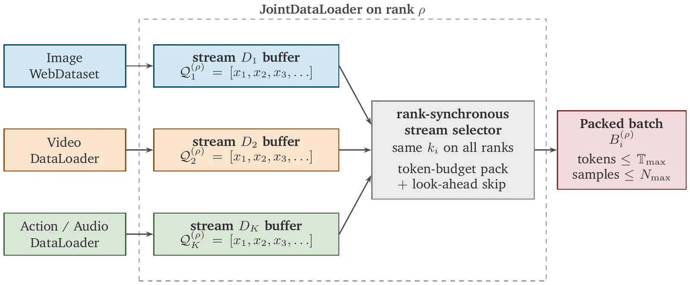
5.2.2 注意力实现。理解塔要因果、生成塔要“看理解 + 生成”的双向注意力。用 FlexAttention 写正确但慢；作者做了“两路扁平注意力”：理解塔一次因果的变长 SDPA；生成塔把键值按样本交错成 \([R_0,G_0,R_1,G_1,\dots]\)，查询只放生成 token，一次双向变长 SDPA。每层两次核函数调用，比 FlexAttention 端到端快 22%（Nano）。Hopper 用 FlashAttention-3，Blackwell 用 NATTEN。
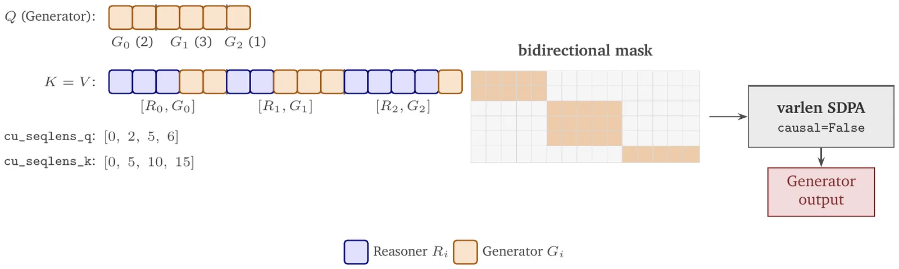
查询只有生成 token：累积 0, 2, 2 + 3 = 5, 5 + 1 = 6，即 cu_seqlens_q = [0, 2, 5, 6]；键值是 R + G：3 + 2 = 5，2 + 3 = 5，4 + 1 = 5，累积 [0, 5, 10, 15]。和图上一致。代码里对应的开关是配置 joint_attn_implementation="two_way"（三个尺寸都是）。
5.2.3 分布式。HSDP（组内分片、组间复制）+ Ulysses 上下文并行（每层两次 all-to-all，从序列分片换到头分片）。最大 CP 度受查询头数限制：Nano 32、Super 64。不用环形注意力，因为它要先把理解和生成 token 交错成一条连续序列才能分片，而 Ulysses 允许两条通路各自分片。
5.2.4 选择性激活检查点。默认全量重算让每步多约 33% 的计算；按“重算 FLOPs / 显存字节”排序，优先保存注意力输出（重算贵、张量小），Nano 在 74k token 预算下吞吐 +13%。代码配置里就是 activation_checkpointing.mode="selective"、save_ops_regex=["fmha"]。
5.2.5 torch.compile。fullgraph=True, dynamic=True，Nano 生成塔训练吞吐 +41%。
5.2.6 视频 VAE。Wan2.2 VAE 在线编码，在 Edge、Nano 上占前向时间的大头。一次编码多帧：256p 68 帧、480p 24 帧、720p 12 帧；torch.compile 再降 52% 延迟；3 分辨率 × 5 宽高比 × 3 种调用（首块、缓存 1、缓存 2）= 45 个静态图，用 AOTInductor 分到 45 张卡上各编一个，热身从约 15 分钟降到 1 分钟以内（图 15，原文第 44 页）。帧数不定时右补到块长再裁掉；机器人数据帧数固定，直接按确切形状编译。
5.2.7 存档。走单独的 Gloo 进程组异步写；子进程负责；第一次算出保存计划后复用（开销 −60%）；复制的张量只存在最低编号的卡上；按卡恢复随机数状态。
| 表 7 | 存档耗时 均值 / 最小 / 最大（秒） | 相对同步存档提速 |
|---|---|---|
| Cosmos3-Nano | 72 / 43 / 250 | 4% |
| Cosmos3-Super | 167 / 40 / 736 | 9% |
5.2.8 吞吐。GB200 上、文生图加文生视频联合训练测的。
| 表 8 | 每步（秒） | TFLOPS | MFU | 步 / 小时 | 图像 token（百万 / 卡·时） | 视频 token（百万 / 卡·时） |
|---|---|---|---|---|---|---|
| Cosmos3-Nano | 7.1 | 520 | 0.23 | 507 | 4.56 | 16.23 |
| Cosmos3-Super | 19.5 | 673 | 0.30 | 185 | 1.66 | 5.91 |
论文说 720p 每次编码 12 帧；代码三个尺寸都是 encode_chunk_frames={"256": 68, "480": 24, "720": 8}，720p 是 8。打包长度：论文说 74,000；代码的 Edge / Nano 基线配置是 max_num_tokens_after_packing=45056，LIBERO 配方和 HF 上 Nano 的 config.json 里是 74000。可能是不同阶段的设置，论文只写了一个值。
正文说 Nano 用 1,024 张、Super 用 2,048 张测吞吐（和 4.2.1 节训练用的卡数一致），表 8 的图注却写 2,048 和 4,096 张。步数换算没问题：3600 / 7.1 = 507，3600 / 19.5 = 184.6 ≈ 185；两个模型的“图像 token / 步数”之比 4.56 / 1.66 = 2.75 和 507 / 185 = 2.74 一致，说明每卡每步的 token 数相同。按 MFU 反推峰值：520 / 0.23 ≈ 2,261、673 / 0.30 ≈ 2,243 TFLOPS，即每卡约 2.25 PFLOPS（BF16 稠密），两行自洽。
PyTorch 参考实现是权威规格，新功能先在这里实现再移植。加速手段：Transformer 块级 torch.compile + CUDA graph（文生图提速 30–60%）；推理时也用 Ulysses CP；CFG 并行（有条件和无条件两路分到两张卡，每步只交换一次，延迟近乎减半）；理解塔缓存（条件固定，理解塔只算一次）；变长打包批处理（只对吞吐有用，机器人这类延迟敏感场景批大小设 1）；提示扩写模式（理解塔写 JSON，再交给生成塔）。理解塔：Nano、Super 基于 Qwen3-VL，直接复用 vLLM / TensorRT-LLM 的支持；Edge 是自定义 Nemotron 主干，单独写了 vLLM 集成。生成塔接入 vLLM-Omni：Cache-DiT、Ulysses、CFG 并行、HSDP、CPU 卸载、VAE 分片并行、动态 FP8。
| 表 9 · 批处理提速 | Nano 256p | Nano 480p | Super 256p | Super 480p |
|---|---|---|---|---|
| H100 80GB | 8% | 2% | 55% | 5% |
| GB200 | 40% | 2% | 9% | 1% |
189 帧视频编码成 1 + 188 / 4 = 48 个隐帧。每个隐帧的 token 数 = (W / 32) × (H / 32)：256p（320 × 192）10 × 6 = 60，整段 2,880；480p（832 × 480）26 × 15 = 390，整段 18,720；720p（1280 × 720）40 × 23 = 920（720 / 32 = 22.5，向上取整，未核实取整方式），整段 44,160。74,000 的预算下 480p 最多放 3 段（4 段 74,880 超了），720p 只能放 1 段，和图注一致；但 256p 能放 25 段，图注说 256p 的最大批是 6，不是 token 预算限制的，可能是显存或别的上限，论文没说。
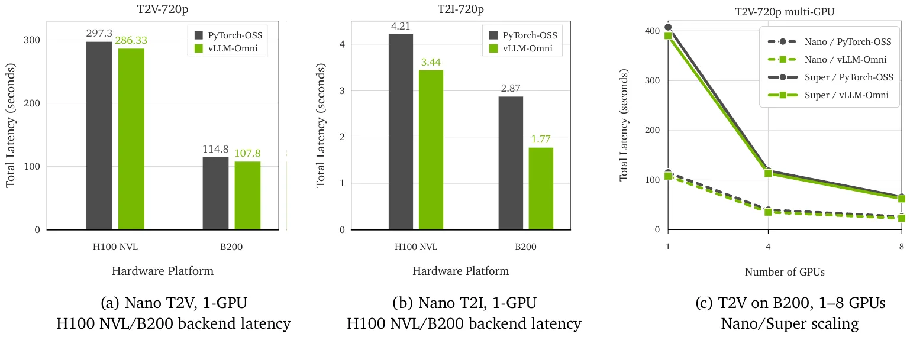
在 Lepton 或 Slurm 上调度生成、打分、端点评测三类任务；每次记录检查点、代码版本、基准、生成参数和数据集，保证每个分数可追溯。生成和打分分开，换指标不用重新生成。理解塔用 VLMEvalKit + vLLM。分数存关系库，生成物存对象存储，人评结果和自动指标放在一起看。
结论：48 个基准分四组（通用 19、机器人 17、智能基建 9、驾驶 3），VLMEvalKit 测。通用能力和同尺寸开源模型相当、低于 Gemini 3.1 Pro；机器人、智能基建、驾驶三组 Super 领先所有开源模型，机器人组只比 Gemini 3.1 Pro 低 0.4（57.8 对 58.2）。比 Cosmos-Reason2 更好，作者归因于多了 20% 的预训练数据。
| 组平均（表 10） | Super | Qwen3-VL-32B | Cosmos-Reason2-32B | Gemini 3.1 Pro† | Nano | Qwen3-VL-8B | Cosmos-Reason2-8B | Edge | Qwen3-VL-2B | Cosmos-Reason2-2B |
|---|---|---|---|---|---|---|---|---|---|---|
| 通用（19） | 73.7 | 72.8 | 70.0 | 77.5 | 69.6 | 68.9 | 66.3 | 59.7 | 60.3 | 57.5 |
| 机器人（17） | 57.8 | 52.6 | 55.0 | 58.2 | 55.1 | 48.5 | 51.3 | 48.3 | 38.7 | 42.5 |
| 智能基建（9） | 62.6 | 56.1 | 48.5 | 58.6 | 61.0 | 52.7 | 55.6 | 47.9 | 42.4 | 47.7 |
| 驾驶（3） | 79.3 | 40.7 | 72.2 | 47.2 | 76.0 | 46.4 | 68.3 | 59.4 | 42.7 | 55.7 |
| 基准 | Super | Qwen3-VL-32B | Cosmos-Reason2-32B | Gemma-4-31B | Gemini 3.1 Pro† | Nano | Qwen3-VL-8B | Cosmos-Reason2-8B | Gemma-4-E4B | RynnBrain-8B | MiMo-Embodied-7B | Edge | Qwen3-VL-2B | Cosmos-Reason2-2B | Gemma-4-E2B | RynnBrain-2B |
|---|---|---|---|---|---|---|---|---|---|---|---|---|---|---|---|---|
| MMBench-Dev | 87.4 | 87.8 | 86.3 | 86.7 | 93.2 | 85.1 | 85.3 | 82.2 | 66.2 | 85.5 | 81.4 | 76.6 | 77.2 | 73.6 | 60.2 | 81.9 |
| RealWorldQA | 79.2 | 80.3 | 76.1 | 71.8 | 81.8 | 72.2 | 73.2 | 68.2 | 61.0 | 72.5 | 72.0 | 73.3 | 67.3 | 61.4 | 57.1 | 65.9 |
| CVBench | 88.0 | 86.8 | 88.1 | 84.1 | 88.6 | 86.5 | 85.2 | 85.6 | 68.1 | 87.5 | 87.8 | 84.9 | 78.7 | 78.7 | 56.1 | 85.7 |
| VideoPhy2 | 47.4 | 36.8 | 43.3 | 33.1 | 28.7 | 45.6 | 28.2 | 37.1 | 13.8 | 10.5 | 20.8 | 40.3 | 7.9 | 12.8 | 8.4 | 7.3 |
| CausalVQA | 77.0 | 81.0 | 74.5 | 76.5 | 92.0 | 70.0 | 72.0 | 71.5 | 38.0 | 68.5 | 63.0 | 37.0 | 57.0 | 53.5 | 29.5 | 51.0 |
| MVPBench | 70.3 | 58.6 | 62.2 | 27.0 | 59.4 | 66.9 | 51.6 | 54.2 | 32.8 | 50.1 | 43.3 | 53.3 | 43.6 | 43.7 | 31.9 | 44.9 |
| CountBenchQA | 89.1 | 93.6 | 87.5 | 79.1 | 95.3 | 84.8 | 89.5 | 79.9 | 55.4 | 90.5 | 84.6 | 89.9 | 87.5 | 79.7 | 56.9 | 86.0 |
| AI2D | 87.8 | 88.2 | 87.5 | 88.9 | 93.8 | 85.0 | 84.8 | 83.6 | 78.2 | 85.7 | 83.2 | 75.4 | 76.7 | 75.4 | 73.0 | 79.8 |
| DocVQA | 90.4 | 96.0 | 95.1 | 89.6 | 95.8 | 94.2 | 95.6 | 94.3 | 78.1 | 95.4 | 93.9 | 86.8 | 92.8 | 89.9 | 73.4 | 91.8 |
| InfoVQA | 82.4 | 87.6 | 85.1 | 66.5 | 85.0 | 81.8 | 83.4 | 79.8 | 46.1 | 81.8 | 84.2 | 60.1 | 71.7 | 65.0 | 37.8 | 70.5 |
| OCRBench-v2 | 66.7 | 65.9 | 57.4 | 61.8 | 64.5 | 60.1 | 64.1 | 56.6 | 42.4 | 58.6 | 41.2 | 43.7 | 54.2 | 50.1 | 37.8 | 41.0 |
| LogicVista | 55.9 | 47.9 | 46.1 | 57.0 | 81.9 | 43.2 | 41.8 | 37.4 | 31.5 | 40.3 | 39.6 | 34.7 | 39.4 | 34.0 | 29.5 | 34.9 |
| MMMU-Pro | 48.1 | 49.0 | 45.6 | 70.6 | 76.7 | 41.1 | 41.1 | 38.6 | 46.9 | 42.0 | 37.3 | 26.4 | 32.3 | 26.9 | 39.9 | 30.3 |
| MVBench | 74.5 | 72.6 | 72.5 | 64.4 | 72.8 | 73.2 | 69.1 | 70.1 | 48.9 | 69.5 | 56.1 | 58.2 | 60.3 | 60.5 | 41.2 | 64.7 |
| BlinkSpatial | 88.8 | 88.1 | 87.4 | 90.9 | 92.3 | 81.8 | 87.4 | 83.9 | 76.9 | 76.9 | 83.2 | 72.0 | 77.6 | 75.5 | 62.9 | 79.7 |
| BlinkDepth | 91.9 | 82.3 | 85.5 | 87.1 | 79.8 | 92.7 | 87.1 | 87.9 | 77.4 | 91.1 | 81.5 | 79.8 | 74.2 | 83.1 | 70.2 | 87.9 |
| RefCOCO | 89.5 | 90.6 | 70.7 | 81.8 | 84.3 | 84.3 | 87.3 | 81.1 | 71.5 | 75.9 | 74.3 | 80.1 | 84.5 | 80.8 | 66.3 | 71.2 |
| HallusionBench | 49.0 | 52.8 | 50.8 | 57.8 | 64.2 | 45.3 | 50.5 | 42.0 | 42.0 | 45.7 | 40.2 | 40.7 | 42.6 | 28.6 | 36.0 | 45.0 |
| IFBench | 37.0 | 37.0 | 28.2 | 52.3 | 42.5 | 28.5 | 32.0 | 26.0 | 34.2 | 22.8 | 25.8 | 20.8 | 20.0 | 19.8 | 29.0 | 17.8 |
| General Avg. | 73.7 | 72.8 | 70.0 | 69.8 | 77.5 | 69.6 | 68.9 | 66.3 | 53.1 | 65.8 | 62.8 | 59.7 | 60.3 | 57.5 | 47.2 | 59.9 |
| Cosmos-ER | 74.1 | 61.3 | 74.9 | 54.3 | 61.1 | 69.7 | 56.9 | 71.2 | 44.3 | 54.9 | 55.6 | 56.6 | 48.9 | 59.0 | 38.0 | 48.0 |
| Cosmos-CS | 66.4 | 63.4 | 65.2 | 61.1 | 69.5 | 63.9 | 58.4 | 63.1 | 43.2 | 54.1 | 53.8 | 51.5 | 49.7 | 54.8 | 35.3 | 49.0 |
| RefSpatial | 57.0 | 52.7 | 48.0 | 46.6 | 70.0 | 53.1 | 47.6 | 41.1 | 24.6 | 46.6 | 41.3 | 48.4 | 27.1 | 30.7 | 16.2 | 39.0 |
| VSI-Bench | 60.9 | 59.5 | 58.0 | 47.6 | 47.5 | 54.9 | 55.1 | 52.0 | 28.4 | 63.0 | 46.7 | 59.2 | 49.8 | 45.0 | 27.3 | 62.5 |
| SparBench | 54.9 | 48.0 | 42.9 | 46.6 | 51.5 | 54.8 | 40.1 | 38.0 | 28.5 | 49.5 | 41.2 | 52.8 | 34.5 | 35.5 | 30.6 | 47.8 |
| RynnBrain-Area | 53.0 | 53.1 | 50.4 | 58.7 | 65.4 | 52.0 | 33.2 | 43.4 | 35.7 | 56.6 | 47.1 | 39.1 | 24.4 | 31.9 | 31.2 | 58.1 |
| RynnBrain-Spatial | 34.5 | 16.8 | 42.2 | 32.4 | 36.8 | 26.1 | 37.5 | 35.5 | 33.9 | 59.0 | 37.2 | 22.6 | 29.7 | 33.9 | 19.7 | 55.7 |
| RynnBrain-Trajectory | 69.3 | 61.6 | 64.6 | 64.4 | 71.3 | 67.9 | 54.8 | 64.4 | 63.5 | 61.1 | 61.1 | 58.7 | 54.7 | 61.1 | 60.9 | 53.5 |
| RynnBrain-Affordance | 84.6 | 84.2 | 86.8 | 87.8 | 86.8 | 85.1 | 82.6 | 84.6 | 84.4 | 85.3 | 85.7 | 77.6 | 70.5 | 80.0 | 77.0 | 90.4 |
| RynnBrain-Object | 48.3 | 57.0 | 44.9 | 47.2 | 51.5 | 39.8 | 49.2 | 42.0 | 35.2 | 71.6 | 33.5 | 24.0 | 41.2 | 30.1 | 26.7 | 70.7 |
| RynnBrain-Grounding | 74.4 | 77.0 | 76.7 | 72.4 | 82.8 | 72.9 | 68.8 | 72.5 | 59.3 | 74.2 | 57.8 | 51.6 | 33.1 | 54.3 | 31.1 | 45.5 |
| MMSIBench | 41.8 | 33.0 | 31.4 | 32.3 | 40.8 | 36.2 | 26.3 | 29.5 | 37.6 | 38.4 | 30.1 | 32.3 | 28.5 | 28.9 | 33.7 | 33.2 |
| MMSIVideoBench | 26.1 | 33.8 | 29.6 | 33.6 | 38.6 | 27.2 | 28.8 | 29.4 | 39.4 | 28.2 | 30.0 | 24.9 | 25.5 | 23.9 | 32.5 | 24.5 |
| HealthSurgiBench | 44.5 | 24.4 | 53.9 | 19.1 | 24.6 | 56.1 | 23.0 | 46.9 | 20.7 | 23.3 | 24.0 | 62.1 | 26.0 | 31.3 | 17.3 | 18.3 |
| ERQA | 51.2 | 46.5 | 42.8 | 47.8 | 65.2 | 46.0 | 44.0 | 44.2 | 30.2 | 43.0 | 42.0 | 42.0 | 37.8 | 37.2 | 32.5 | 38.8 |
| RoboSpatialHome | 70.0 | 65.1 | 64.3 | 63.0 | 65.1 | 66.3 | 64.8 | 64.5 | 42.0 | 71.4 | 66.1 | 63.4 | 44.6 | 52.0 | 36.3 | 62.9 |
| Where2Place | 71.0 | 56.0 | 59.0 | 52.0 | 61.0 | 64.0 | 53.0 | 50.0 | 17.0 | 11.0 | 58.0 | 55.0 | 32.0 | 33.0 | 15.0 | 11.0 |
| Robotics Avg. | 57.8 | 52.6 | 55.0 | 51.0 | 58.2 | 55.1 | 48.5 | 51.3 | 39.3 | 52.4 | 47.7 | 48.3 | 38.7 | 42.5 | 33.0 | 47.6 |
| VANTAGE-2DGrounding | 76.2 | 72.4 | 45.7 | 45.1 | 46.9 | 75.6 | 73.3 | 66.9 | 10.1 | 67.6 | 59.4 | 49.8 | 65.1 | 56.3 | 5.5 | 49.2 |
| VANTAGE-Astro2D | 81.5 | 76.8 | 22.6 | 68.7 | 77.7 | 78.3 | 69.2 | 81.1 | 58.8 | 10.5 | 57.8 | 76.7 | 56.6 | 72.5 | 48.4 | 0.0 |
| VANTAGE-2DPointing | 72.9 | 75.6 | 74.0 | 76.8 | 85.6 | 74.8 | 68.6 | 68.7 | 43.4 | 64.9 | 55.0 | 63.0 | 53.1 | 59.7 | 31.7 | 60.3 |
| VANTAGE-DVC | 29.5 | 29.4 | 30.1 | 29.6 | 30.2 | 31.4 | 29.6 | 32.5 | 14.3 | 28.4 | 2.2 | 20.9 | 0.8 | 28.5 | 9.3 | 0.0 |
| VANTAGE-EventVerif | 71.3 | 60.0 | 73.6 | 55.2 | 67.5 | 68.9 | 59.4 | 64.1 | 40.6 | 58.9 | 58.0 | 64.8 | 44.7 | 55.3 | 27.6 | 41.6 |
| VANTAGE-SOT | 62.2 | 44.2 | 33.1 | 54.7 | 72.7 | 59.2 | 33.1 | 37.7 | 16.0 | 4.8 | 9.2 | 18.7 | 29.8 | 26.7 | 11.5 | 4.8 |
| VANTAGE-Temporal | 51.9 | 46.8 | 50.5 | 33.0 | 41.7 | 48.0 | 43.3 | 47.3 | 16.9 | 20.1 | 5.9 | 39.1 | 35.2 | 39.0 | 9.0 | 25.9 |
| VANTAGE-VQA | 69.5 | 71.3 | 70.3 | 67.0 | 71.2 | 69.0 | 66.4 | 68.0 | 51.5 | 65.4 | 67.5 | 64.4 | 63.9 | 64.7 | 46.2 | 62.9 |
| TARBench | 48.4 | 28.1 | 36.6 | 31.9 | 33.6 | 43.6 | 31.5 | 34.1 | 12.8 | 34.8 | 32.6 | 34.1 | 32.7 | 26.6 | 8.5 | 34.2 |
| Smart Infra. Avg. | 62.6 | 56.1 | 48.5 | 51.3 | 58.6 | 61.0 | 52.7 | 55.6 | 29.4 | 39.5 | 38.6 | 47.9 | 42.4 | 47.7 | 22.0 | 31.0 |
| LingoQA | 76.8 | 66.4 | 70.0 | 57.2 | 71.2 | 71.4 | 68.4 | 71.6 | 24.2 | 60.4 | 70.4 | 58.4 | 59.2 | 58.2 | 19.0 | 50.2 |
| AVSpecialCollision | 79.3 | 37.3 | 77.3 | 32.3 | 54.0 | 79.0 | 34.0 | 74.0 | 33.3 | 33.7 | 37.3 | 66.7 | 36.3 | 74.3 | 33.7 | 33.3 |
| AVSpecialStopBehavior | 81.6 | 18.4 | 69.4 | 20.4 | 16.3 | 77.5 | 36.7 | 59.2 | 20.4 | 36.7 | 42.9 | 53.1 | 32.6 | 34.7 | 20.4 | 36.7 |
| Driving Avg. | 79.3 | 40.7 | 72.2 | 36.6 | 47.2 | 76.0 | 46.4 | 68.3 | 26.0 | 43.6 | 50.2 | 59.4 | 42.7 | 55.7 | 24.4 | 40.1 |
Gemma-4-31B、Gemma-4-E4B、Gemma-4-E2B、RynnBrain-8B、RynnBrain-2B、MiMo-Embodied-7B 的组平均见上面全表。驾驶的两个内部基准：AVSpecialCollision 三类（碰撞、险碰、无碰）各 100 段，报三类准确率均值；AVSpecialStopBehavior 五类（完全停、滚动停、不停、无关、假标志）各 10 段，报五类准确率均值。HealthSurgiBench 是自建的手术室基准，23 种题型，规则打分加 Qwen3-4B 评审。
我把 48 行按列平均（脚本见报告），64 个组平均里 63 个和原文完全一致，只有 Super 的驾驶平均算出来是 (76.8 + 79.3 + 81.6) / 3 = 79.23，原文 79.3，差 0.07，可能是用未四舍五入的分项算的。
另一个发现：AVSpecialStopBehavior 说是 5 类 × 10 段、报 5 类准确率的平均，那每类准确率是 10% 的整数倍，平均必是 2% 的整数倍。但表里的数是 81.6、18.4、69.4、20.4、16.3、77.5、36.7、59.2、53.1、42.9……没有一个是 2 的倍数；它们正好是 40/49、9/49、34/49、10/49、8/49、38/49、18/49、29/49、26/49、21/49。所以实际是 49 段视频的整体准确率，不是 50 段的类平均。碰撞基准没有这个问题（300 段，79.3 = 238 / 300）。
评测提示统一先用 Claude Opus 4.7 改写成训练时的 JSON 结构（模板在附录 B.2），所有模型 1024 × 1024。UniGenBench 加了 570 条物理世界提示（机器人和工业、标牌文字、驾驶、工地、流体、医疗），共 1,170 条，Gemini 3.1 Pro 逐测试点判过 / 不过。CVTG 用 OCR + 匈牙利匹配算 GNED、PNED（500 条英文长提示、102 条中文）。HPSv3 是人类偏好分，Aesthetic v2 是 LAION 美学分。
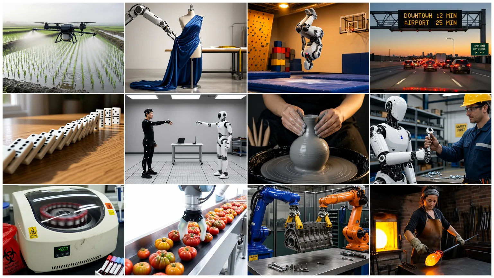
| 表 11 | 类型 | UniGen All | Orig | Phys | 500L GNED | 500L PNED | 102ch GNED | 102ch PNED | Aesv2 | HPSv3 |
|---|---|---|---|---|---|---|---|---|---|---|
| Cosmos3-Super-Text2Image | 开源 | 91.36 | 93.34 | 89.54 | 80.88 | 89.08 | 32.02 | 41.22 | 5.91 | 11.60 |
| Cosmos3-Super | 开源 | 87.33 | 85.21 | 89.64 | 66.77 | 70.97 | 8.48 | 16.31 | 5.76 | 9.49 |
| Cosmos3-Nano | 开源 | 84.61 | 87.32 | 82.12 | 24.23 | 26.53 | 4.63 | 9.70 | 5.76 | 8.99 |
| Gemini 3 Pro Image | 闭源 | 90.69 | 92.81 | 89.74 | 59.24† | 71.79† | 46.00 | 76.40 | 5.70 | 11.78 |
| FLUX.2-dev | 开源 | 87.60 | 89.77 | 85.61 | 74.71 | 84.98 | 44.33 | 68.74 | 5.75 | 11.38 |
| Qwen-Image-2512 | 开源 | 84.25 | 87.32 | 81.44 | 79.68 | 90.86 | 46.33 | 71.26 | 5.92 | 11.03 |
| Hunyuan 3.0 | 开源 | 84.02 | 87.68 | 80.67 | 71.40 | 87.68 | 49.05 | 71.31 | 5.90 | 11.93 |
| Z-Image-Turbo | 开源 | 78.14 | 81.53 | 75.03 | 75.20 | 86.95 | 49.18 | 73.32 | 5.70 | 11.36 |
† Gemini 3 Pro Image 常把文字写成大写；不算这类错误时 CVTG-500L 为 GNED 75.97、PNED 91.45。
后训练版在语义对齐和英文文字上领先，中文文字仍明显落后（102ch GNED 32.02，其余模型 44–49）。Artificial Analysis 文生图榜（2026-05-28，图 18 是网页截图，原文第 56 页）开源第一、总第四。
三个自动基准加两个人评。提示统一用 Claude Opus 4.6 改写成 JSON。
| 表 12 | 类型 | PAI T2V 总 | 领域 | 质量 | PAI I2V 总 | 领域 | 质量 | RBench I2V |
|---|---|---|---|---|---|---|---|---|
| Cosmos3-Super | 开源 | 80.0 | 86.8 | 73.1 | 82.8 | 87.3 | 78.2 | 58.1% |
| Cosmos3-Nano | 开源 | 79.4 | 85.8 | 73.0 | 82.7 | 87.2 | 78.1 | 58.4% |
| Wan2.2-A14B | 开源 | 78.0 | 83.2 | 72.8 | 81.3 | 85.3 | 77.3 | 50.7% |
| HunyuanVideo-1.5 | 开源 | 76.5 | 80.9 | 72.0 | 81.7 | 85.9 | 77.6 | 46.0% |
| Cosmos-Predict2.5-2B | 开源 | 76.5 | 79.9 | 73.2 | 81.2 | 84.6 | 77.9 | 46.4% |
| Cosmos-Predict2.5-14B | 开源 | 76.4 | 79.5 | 73.2 | 81.1 | 84.0 | 78.1 | — |
| Wan2.1-14B | 开源 | 76.4 | 80.1 | 72.7 | 80.2 | 83.6 | 76.8 | — |
| Wan2.2-5B | 开源 | 76.3 | 79.6 | 73.0 | 81.0 | 84.6 | 77.4 | — |
| Veo-3.1 | 闭源 | 79.1 | 85.2 | 72.9 | 82.6 | 87.6 | 77.6 | 56.3% |
| Seedance-1.5-Pro | 闭源 | 76.9 | 82.1 | 71.6 | 80.8 | 84.7 | 76.9 | 58.4% |
| Wan 2.6 | 闭源 | 78.6 | 85.2 | 72.0 | 81.9 | 85.9 | 77.8 | 60.7% |
总分 = 0.5 × (领域 + 质量)：Super T2V 0.5 × (86.8 + 73.1) = 79.95 → 80.0，Nano 79.4，Wan2.2-A14B 78.0，Veo 79.05 → 79.1，I2V 两行 82.75、82.65 → 82.8、82.7，全对（四舍五入）。表 12 图注说“Cosmos3-Nano 在 RBench 上领先”，但同表 Wan 2.6（闭源）60.7% 最高，Nano 58.4% 和 Seedance-1.5-Pro 并列第二；正文写的“Nano 并列第二”才是对的，图注只在“开源模型里”成立。Super 比 Predict2.5-2B 在 PAIBench-G T2V 高 3.5 分，主要来自领域分（86.8 对 79.9），质量分反而略低（73.1 对 73.2）。
| 表 13 (a) 图生视频 | 直接 | + WMReward 选优 |
|---|---|---|
| Cosmos3-Super | 43.8 | 48.9 |
| Cosmos3-Nano | 40.2 | 43.8 |
| Sora2（闭源） | 42.3 | 46.4 |
| Wan2.2-A14B | 38.3 | 44.4 |
| 表 13 (b) 视频续写 | 直接 | + WMReward 选优 |
|---|---|---|
| Cosmos3-Super | 59.7 | 63.4 |
| Cosmos3-Nano | 50.2 | 57.7 |
| Magi-1 | 56.0 | 62.6 |
| Video-GPT | 35.0 | — |
| VideoPoet（闭源） | 29.5 | — |
Physics-IQ 的续写模式用 3 秒条件视频预测后 5 秒；提示由仿照 PhyT2V 的迭代扩写生成。人评两个：Cosmos HUE（同 PAIBench-G 提示中抽 100 条，每模型 500 段视频，每段最多 20 个“是 / 否 / 不清楚”原子问题，问题由 GPT 5.2 的三层流水线生成再人工补充，两人标注、分歧交质检）；Human World Bench（EgoVerse 来源的 180 个第一人称操作样本，指令遵循和物理合理两个通过率取平均）。作者指出人评把模型拉开约 10 分，而自动的 PAIBench-G 只有约 4 分。
| 表 14 | 类型 | HUE T2V | HUE I2V | HWB I2V |
|---|---|---|---|---|
| 真实视频 | — | 93.6 | 94.4 | — |
| Cosmos3-Super | 开源 | 89.3 | 89.6 | 71.9 |
| Cosmos3-Nano | 开源 | 87.6 | 88.6 | 66.9 |
| Wan2.2-A14B | 开源 | 88.2 | 88.4 | 60.7 |
| HunyuanVideo-1.5 | 开源 | 86.5 | 85.6 | 54.7 |
| Wan2.1-14B | 开源 | 84.0 | 83.9 | 33.1 |
| Wan2.2-5B | 开源 | 80.8 | 80.4 | 25.4 |
| Cosmos-Predict2.5-14B | 开源 | 82.1 | 83.0 | 38.7 |
| Cosmos-Predict2.5-2B | 开源 | 81.8 | 82.6 | 32.8 |
| Veo-3.1 | 闭源 | 91.3 | 89.7 | 67.8 |
| Seedance-1.5-Pro | 闭源 | 90.0 | 87.6 | — |
正文说 Nano 在 HUE I2V 是 88.5，表 14 和附录表 33 都是 88.6。每段视频的问题数：正文和附录“可靠性”一段写“最多 20 个”，附录“标注流程”一段写“最多 16 个”。置信区间可以复算：Super T2V p = 0.893、N = 10,000 时 1.96 × √(0.893 × 0.107 / 10000) × 100 = 0.61，和“约 ±0.6”一致。HWB 的差距 71.9 − 67.8 = 4.1、71.9 − 60.7 = 11.2，对。
Artificial Analysis 图生视频榜（无音频，2026-05-28，图 19 截图在原文第 60 页）：Cosmos3-Super-Image2Video 开源第一、总第 22。
Cosmos-SoundBench：从 FoleyBench 取 144 条非语音提示。打分分三步：Claude Opus 4.7、Gemini 3.1 Pro、GPT 5.5 投票列出提示要求的声音；Gemini 3.1 Pro 不看提示先描述画面；评审给语义正确（SA）、音画对齐（AVAlign）、画面支撑（VisualSupport）打分，跑三次取平均。SAV = 0.60 SA + 0.30 AVAlign + 0.10 VisualSupport；再用 audiobox-aesthetics 的制作质量 PQ，AVQ = 0.5 SAV + 0.5 PQ。每条 5 个种子。
| 表 15 | 类型 | AVQ | SAV | SA | AVAlign | 画面支撑 | PQ |
|---|---|---|---|---|---|---|---|
| Cosmos3-Super | 开源 | 7.31 | 8.34 | 8.30 | 8.14 | 9.18 | 6.28 |
| Cosmos3-Nano | 开源 | 7.34 | 8.35 | 8.33 | 8.16 | 9.10 | 6.32 |
| LTX-2.3 | 开源 | 7.10 | 7.80 | 7.86 | 7.58 | 8.12 | 6.39 |
| Seedance-1.5-Pro | 闭源 | 7.64 | 8.21 | 8.22 | 8.06 | 8.61 | 7.06 |
| Veo-3.1 | 闭源 | 7.45 | 8.21 | 8.21 | 8.01 | 8.85 | 6.68 |
| LTX-2.3 Pro | 闭源 | 7.32 | 7.93 | 7.96 | 7.74 | 8.35 | 6.70 |
| Wan2.6 | 闭源 | 7.23 | 7.90 | 7.99 | 7.54 | 8.45 | 6.55 |
| Sora 2 | 闭源 | 6.90 | 7.94 | 7.97 | 7.70 | 8.49 | 5.85 |
8 行全部对上（差 ≤ 0.006，是分项四舍五入）：例如 Super SAV = 0.6 × 8.30 + 0.3 × 8.14 + 0.1 × 9.18 = 8.340，AVQ = (8.34 + 6.28) / 2 = 7.31；Seedance (8.21 + 7.06) / 2 = 7.635 → 7.64。正文把公式写成“0.5 SAV + 0.5 AQ”，AQ 就是表里的 PQ。结论也由公式决定：Cosmos 3 的语义和对齐分最高，但 PQ 低，所以 AVQ 输给 Seedance 和 Veo。
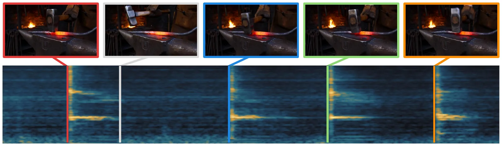
双权重 CFG：每步算三次——全条件、只有提示（去掉控制视频）、保留控制视频但提示换成固定负提示；控制权重从“只有提示”外推向“全条件”，文本权重从“负提示”外推开。作者说比单一 guidance 好。基础模型默认文本 3、控制 1.5。
通用迁移（PAIBench-C）：600 段（AgiBot World 机械臂、OpenDV 驾驶、Ego-Exo4D 第一人称各 200），单一控制。对照 Cosmos-Transfer2.5（每种控制一个 ControlNet 分支）；Cosmos 3 只是把控制视频放进输入序列。
| 表 16 | DOVER ↑ | 分割 mIoU ↑ | 模糊 SSIM ↑ | 边缘 F1 ↑ | 深度 si-RMSE ↓ |
|---|---|---|---|---|---|
| Cosmos3-Super | 10.14 | 0.71 | 0.91 | 0.50 | 0.58 |
| Cosmos3-Nano | 10.39 | 0.72 | 0.91 | 0.49 | 0.62 |
| Cosmos-Transfer2.5 | 9.49 | 0.68 | 0.90 | 0.45 | 0.68 |
驾驶迁移（AVBench-C）：486 段单视角，控制输入是车道线、路沿、信号灯、标志和所有交通参与者的渲染图。自动指标：视觉里程计漂移、动态 / 静态物体对应、VLM 判环境；人评 1–3 分的视频质量和车道线还原。
| 表 17 | 自车漂移 ↓ | 动态物 ↑ | 静态物 ↑ | 环境 ↑ | 人评·画质 ↑ | 人评·车道线 ↑ |
|---|---|---|---|---|---|---|
| Cosmos3-Super | 0.003 | 0.64 | 0.41 | 0.90 | 2.86 | 2.45 |
| Cosmos3-Nano | 0.003 | 0.67 | 0.41 | 0.90 | 2.82 | 2.50 |
| Cosmos-Transfer2.5-AV-Singleview | 0.008 | 0.62 | 0.42 | 0.90 | 2.59 | 2.47 |
原文第 64 页的图 21 是一段驾驶控制视频（高清地图元素和长方体表示的车辆）和 Nano 生成结果的对照，没有放。
结论：核心问题是“统一的动作中训练能不能当可复用的先验”。做法：同样的后训练配方、模型、数据和算力，比较从预训练检查点（PT-init，没见过动作）和从中训练检查点（MT-init）出发。四个领域里 MT-init 基本全面更好；新实体（LIBERO-10）上 MT-init 收敛快得多。
| 表 18 | 驾驶 ID RRE° ↓ | RTE m ↓ | ATE m ↓ | 相机 FD RRE° ↓ | RTE m ↓ | ATE m ↓ | 第一人称 FD PSNR ↑ | 机器人 FD PSNR ↑ |
|---|---|---|---|---|---|---|---|---|
| Cosmos3-Super（MT-init） | 0.232 | 0.014 | 0.90 | 0.142 | 0.026 | 0.99 | 16.19 | 26.04 |
| Cosmos3-Nano（MT-init） | 0.211 | 0.014 | 0.98 | 0.147 | 0.029 | 1.24 | 16.12 | 25.52 |
| Cosmos3-Super（PT-init） | 0.284 | 0.018 | 1.32 | 0.293 | 0.036 | 1.82 | 15.34 | 22.69 |
| Cosmos3-Nano（PT-init） | 0.249 | 0.017 | 1.20 | 0.172 | 0.034 | 1.61 | 15.22 | 23.24 |
| Lingbot-World | – | – | – | 0.299 | 0.057 | 2.88 | – | – |
| HY-World1.5 | – | – | – | 0.377 | 0.042 | 1.39 | – | – |
| VGGT | 0.596 | 0.768 | 23.46 | – | – | – | – | – |
| DepthAnything3 | 0.312 | 0.354 | 9.29 | – | – | – | – | – |
| LOME | – | – | – | – | – | – | 9.36 | – |
| Ctrl-World | – | – | – | – | – | – | – | 22.99 |
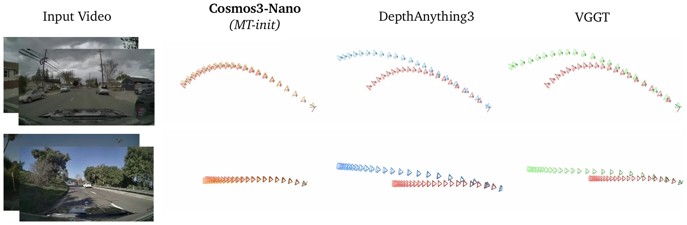
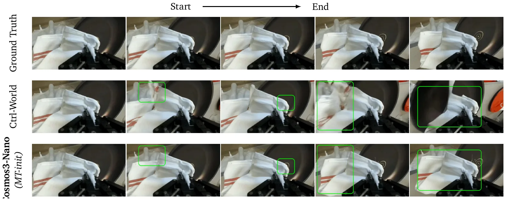
策略：Cosmos3-Nano-Policy-DROID 提交到三个基准，三个用的是同一个模型、同一组超参。
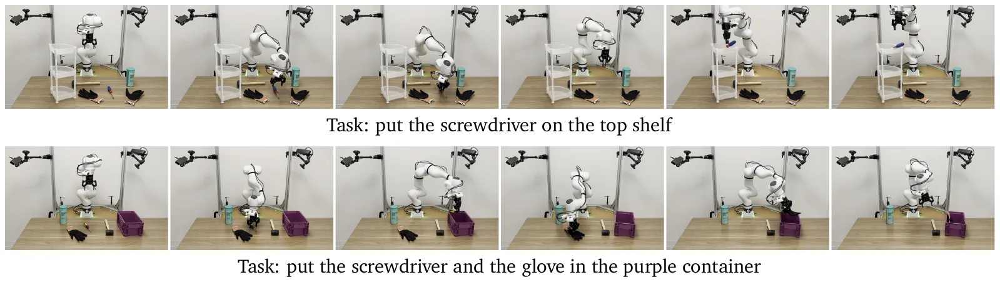
| 表 19 · 成功率 % | 总·模糊 | 总·默认 | 总·具体 | 简单·模糊 | 默认 | 具体 | 中等·模糊 | 默认 | 具体 | 复杂·模糊 | 默认 | 具体 |
|---|---|---|---|---|---|---|---|---|---|---|---|---|
| Cosmos3-Nano-Policy-DROID | 20.6 | 36.8 | 39.7 | 23.3 | 40.6 | 42.0 | 23.3 | 35.4 | 40.3 | 4.1 | 25.3 | 29.4 |
| Cosmos3-Nano（PT-init） | 16.7 | 28.1 | 30.2 | 17.8 | 30.3 | 32.8 | 19.0 | 28.7 | 29.5 | 7.1 | 18.2 | 21.8 |
| π0.5 | 15.2 | 28.0 | 28.1 | 16.2 | 29.7 | 29.8 | 17.9 | 31.5 | 31.0 | 5.3 | 13.5 | 14.7 |
| DreamZero | 14.9 | 25.7 | 23.9 | 15.0 | 26.1 | 25.8 | 19.5 | 30.0 | 26.7 | 4.1 | 14.1 | 10.6 |
| π0-FAST | 9.2 | 15.5 | 14.9 | 9.5 | 20.2 | 19.4 | 12.8 | 13.3 | 12.6 | 0.0 | 2.9 | 3.5 |
| paligemma-binning | 3.1 | 3.4 | 5.5 | 2.2 | 3.4 | 4.1 | 5.9 | 4.9 | 10.3 | 0.0 | 0.0 | 0.0 |
| GR00T N1.6 | 5.4 | 7.2 | 5.3 | 7.2 | 8.8 | 7.5 | 4.9 | 7.9 | 4.1 | 0.0 | 0.0 | 0.0 |
| π0 | 2.8 | 5.0 | 3.5 | 2.8 | 7.2 | 5.3 | 3.8 | 3.6 | 2.1 | 0.0 | 0.0 | 0.0 |
正文说“具体指令下 39.7%，超过 π0.5 的 28.1% 和 DreamZero 的 25.2%”。表 19 里 DreamZero 的“总·具体”是 23.9，25.2 这个数表里没有（默认指令是 25.7）。
“总”不是三档的简单平均（Cosmos 具体指令三档平均是 37.2，不是 39.7），应是按任务数加权。我用 8 个模型 × 3 种指令共 24 个“总”值反解三档的任务数：在和为 120 的整数组合里，简单 64、中等 39、复杂 17 拟合最好，24 个值的最大误差 0.07，其余组合都更差。这是我的推断，论文没给分档任务数。另一个细节：Cosmos 在“复杂·模糊”上输给自己的 PT-init（4.1 对 7.1），是表里唯一一格。
新实体适应（LIBERO-10）：第三人称 + 腕部两路相机，每个检查点每个任务 50 次、共 500 次。
| 表 20 · 迭代 | 500 | 1000 | 1500 | 2000 |
|---|---|---|---|---|
| Cosmos3-Nano（MT-init） | 24.6% | 91.4% | 95.8% | 97.4% |
| Cosmos3-Nano（PT-init） | 0.0% | 73.8% | 93.4% | 95.2% |
500 次试验的成功率只能是 0.2% 的整数倍，表里 7 个数都是（24.6% = 123 / 500，97.4% = 487 / 500）。官方仓库的 LIBERO-10 配方 max_iter=2000、save_iter=500，正好对应表 20 的四列；评测脚本默认每任务 50 次。完整设置见 LIBERO 配方。注意这只是 LIBERO-10（Long）一个套件、只在 libero_10 上训练，不能和 OpenWAM 等“四套件平均”直接比。
动作数据的协同：仿照语言迁移研究，做两两协同矩阵。对角线是单域 2,000 步；非对角是行、列两域 50 / 50 混合 4,000 步（行域的训练量相同）。FD 报 PSNR、ID 报 MSE；策略模式因为分布多峰，报 4 次采样里最小的 PSNR / MSE。
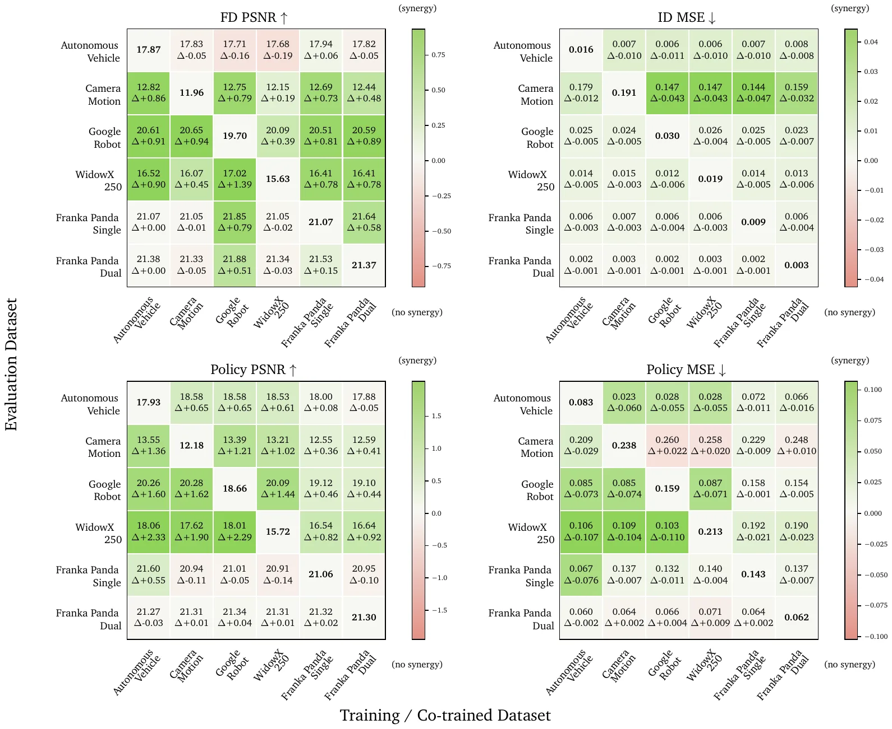
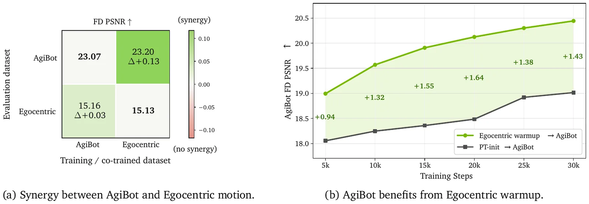
小结：一个基础模型可以适应相机控制生成、驾驶逆向动力学、手部正向动力学、机器人正向动力学和机器人策略，PT-init 对 MT-init 的比较说明统一动作中训练产生了可复用的先验。附录 E.4、E.5 有进一步的动作消融。
6.3.1 生成指南。基础模型支持 10–30 FPS、5–400 帧、256p / 480p / 720p、五种宽高比；动作模式支持 10–30 FPS 的原生控制频率、16–400 帧的预测长度；后训练模型只保留一种模式和频率（DROID 策略是 15 FPS、32 步）。提示用 JSON 结构（附录 A），可由 Claude Opus 4.6 或 Cosmos 3 理解塔扩写；JSON 里明写时长、FPS、分辨率、宽高比。负提示按模型和模式分别调。
| 表 21 · 生成器 | 模式 | 采样参数 | 负提示 |
|---|---|---|---|
| Nano / Super | 音视频 | 50 步，guidance 6，shift 10，全程 CFG | 附录 B.6 |
| Super-Text2Image | 图像 | 50 步，guidance 4，shift 3 | 空 |
| Super-Image2Video | 视频 | 50 步，guidance 6，shift 5 | 附录 B.3（由用户提示自动生成） |
| Nano / Super | 正向 / 逆向动力学 | 50 步，guidance 1，shift 5 | 空 |
| Nano-Policy-DROID | 策略 | 4 步，guidance 3，shift 5 | 空 |
| Nano / Super | 迁移 | 50 步，文本 guidance 3，控制 guidance 1.5，shift 10 | 附录 B.6 |
6.3.2 理解塔当提示扩写器。扩写不只是改写：先“想象”场景布局和世界状态，再排时间进程，最后加音频，产出一个有类型的 JSON“场景程序”，可以独立检查。请求分四个标记块：instructions（只输出一个 JSON、不加评论）、image / video_description（原始需求，图生视频时附条件图，并要求 t = 0 和图一致）、task_constraints（字段顺序、时间格式 M:SS、要原样复制的时长 / FPS / 分辨率等）、output_json_template（必须填的键）。系统提示就是“You are a helpful assistant”。
六条线，每条最后说明 Cosmos 3 的位置：
一个架构统一语言、图像、视频、音频、动作的理解和生成，靠的是模态编码器、结构化 token 排列和“自回归推理 + 扩散生成”的 MoT。作者期望它成为合成世界和真实世界之间的桥：更好的合成数据、更好的专门化起点、更好的闭环训练环境。报告没有单独的“局限”一节；NVIDIA/cosmos README 的局限说明提到长时长、高分辨率、复杂物理下会有时间不一致、物体变形、动力学不合理。
A.1 图像描述用“四象限扫描”：四个象限和中心区域分别描述再合并，适合多主体、复杂布局。视频多一遍专门写时间变化。两个描述模型都是 LoRA 微调的 Qwen3-VL-8B；视频 8 FPS 取帧，温度 0.7，像素上下限沿用 Qwen3-VL 默认 131,072 和 25,165,824。
A.2 图像结构的顶层字段：subjects[]（每个主体的身份、外观、位置、姿态、服饰等）、背景、光照、美学、风格、相机视角、构图等。A.3 视频结构在此基础上加 actions[]（按时间排的关键动作）、状态变化、全局动作时间线、时间段、段间转场、相机运动和可选的 audio_description。原文给了完整字段表和 JSON 骨架（第 81–85 页）。
B.1 理解塔扩写模板：文生视频、图生视频、视频续写各一个变体，都要求先写 scene_imagination，再写带 M:SS 时间的 temporal_caption，再写 audio_description，并原样复制时长、FPS、宽高比、分辨率。B.2 文生图模板（给 Super-Text2Image；comprehensive_t2i_caption 80–200 词，subject_details 2–5 条）。B.3 图生视频模板，负提示从用户提示自动派生。B.4 视频迁移在用户描述前加一句系统提示：“你是按用户指令和控制信号（边缘、模糊、深度或分割）生成图像或视频的助手”，训练和推理都加。B.5 动作生成的 JSON：cinematography.framing（视角说明，多视角拼图时写清布局）、actions[{time, description, idle_frame}]、duration、fps（条件帧率）、resolution、aspect_ratio；逆向动力学不写 idle_frame（动作要严格跟随视频）。B.6 基础模型的负提示（按 JSON 结构写的模糊、变形、压缩伪影、漂浮等）。B.7 文生图的智能体扩写：GPT-5.5 扩写和改写正负提示，Gemini 3.1 Pro 当评审打 1–10 分并列缺陷，最多改写 2 次，≥ 9 分且无严重问题就停，取最高分的图；这就是 Artificial Analysis 提交的流程。
图 30（原文第 91 页）的动作提示例子是 16 帧、fps 10.0、"idle_frame": "4 out of 16"、"duration": "2s"、时间 "0:00-0:02"。16 帧在 10 FPS 下是 1.6 秒；按 B.5 的说法，结束时间“四舍五入”得 0:02 没问题，顶层 duration“截断为整数秒”应是 1s 而不是 2s。可能这段其实有 17 帧或取整规则写反了，影响很小，记一笔。
| 表 22 | 片段数 | 分辨率 / FPS | RGB / 深度 / 分割 / 框 / 物理 / 相机 / 描述 |
|---|---|---|---|
| SDG-PhyxSim | 76,489 | 1920 × 1080 / 30 | ✓ ✓ ✓ — ✓ ✓ ✓ |
| SDG-RobotSim | 208,022 | 不定 | ✓ 部分 部分 — 部分 ✓ ✓ |
| SDG-DriveSim | 264,000 | 3840 × 2160 / 24 | ✓ — — — — — ✓ |
| SDG-SynHuman | 236,937 | 1920 × 1080 / 30 | ✓ ✓ — — — ✓ — |
| SDG-Warehouse | 122,952 | 1920 × 1080 / 30 | ✓ ✓ ✓ ✓ — ✓ — |
C.1 SDG-PhyxSim：Isaac Sim + PhysX，每帧 16 个子步；十类场景（多米诺、搅拌球、保龄球、台球、塔倒塌、破碎球、落物、斜坡滚动、斜坡障碍、障碍阵）；每次运行 4 个固定相机，5 秒（搅拌球 8 秒）；逐物体线速度、角速度、累积旋转、质心位移，静态物理参数，USD 场景文件可精确重放；深度 16 位 FFV1，\(d=(v/65535)\,d_{\max}\)。合计约 5,700 万 RGB 帧、14.9 TiB。
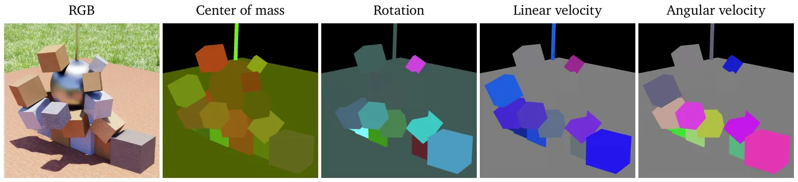
C.2 SDG-RobotSim：公开 v1.0 共 386,270 段 RGB：动作（SOMA 人形运动，AgiBot A3、Unitree G1、H2）170,735 段（44.20%）、操作 110,115 段（28.51%，MimicGen、DreamZero、Simulario）、碰撞 105,420 段（27.29%，IsaacLab、MobilityGen）。C.3 SDG-DriveSim：LLM 场景智能体把自然语言描述变成 USD 世界，每个场景最多 10 种确定性变体；264,000 段、约 1,467 小时、4K 24 fps、每段约 20 秒；加塞 32.9%、车人 21.1%、变道 12.9%、行人 12.4%、天气 9.2%、绕行 8.8%、应急车辆 2.7%。C.4 SDG-SynHuman：数字人，60–120 秒长片段，1–9 人；236,937 段、5,841 小时、平均 88.8 秒；4,050 个人物资产、8,184 个动画、198 个室内和 200 个室外环境，7 种主相机运动加 7 种叠加运动（表 23、24）。C.5 SDG-Warehouse：叉车险碰 23%、火灾疏散 36%、叉车撞货架 20%、搬箱 21%，约 12.3 万段、412 小时，含深度、实例分割、着色分割、边缘、2D / 3D 框。
C.6 分布：在 Cosmos-Embed1 嵌入空间里看，五个合成集各成一团，和预训练分布只有少量重叠（图 36、表 25）。
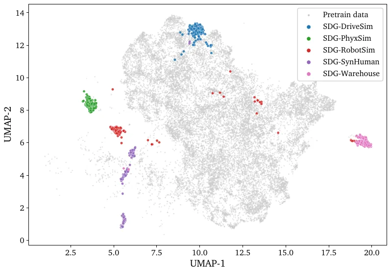
| 表 25 | CosSim ↑ | MMD² ↓ | 覆盖中心数 |
|---|---|---|---|
| 预训练（自参照） | 0.796 | 0.005 | 19,934 |
| SDG-DriveSim | 0.667 | 0.119 | 5,577 |
| SDG-PhyxSim | 0.589 | 0.221 | 6,644 |
| SDG-RobotSim | 0.627 | 0.162 | 9,760 |
| SDG-SynHuman | 0.650 | 0.191 | 4,975 |
| SDG-Warehouse | 0.712 | 0.361 | 1,920 |
C.7 消融：从同一个预训练 Nano 分别加每个合成集微调，在 PAIBench-G T2V 上比（表 26）。变化都在 ±1.5 分以内；人类领域分每个变体都降（−0.38 到 −0.69），作者解读为人的仿真到真实差距最大；全部混合（SDG-All）九项里八项为正。
| 表 26 | 总分 | 领域 | 质量 | 常识 | 驾驶 | 机器人 | 工业 | 人类 | 物理 |
|---|---|---|---|---|---|---|---|---|---|
| 基线（预训练） | 79.67 | 86.87 | 72.46 | 91.89 | 70.86 | 87.37 | 88.66 | 85.46 | 94.58 |
| + SDG-DriveSim | 79.76 | 86.97 | 72.55 | 92.41 | 70.48 | 88.26 | 88.92 | 84.91 | 94.58 |
| + SDG-RobotSim | 79.66 | 86.60 | 72.72 | 92.22 | 69.83 | 87.60 | 87.44 | 84.99 | 94.50 |
| + SDG-Warehouse | 79.74 | 87.00 | 72.48 | 92.34 | 71.15 | 87.97 | 88.63 | 85.01 | 94.79 |
| + SDG-PhyxSim | 79.62 | 86.68 | 72.56 | 91.57 | 69.44 | 88.17 | 89.51 | 84.77 | 94.72 |
| + SDG-SynHuman | 79.79 | 87.16 | 72.41 | 92.55 | 71.33 | 88.60 | 88.51 | 85.08 | 94.56 |
| + SDG-All | 79.77 | 86.97 | 72.56 | 92.40 | 71.19 | 87.68 | 88.79 | 84.99 | 94.67 |
正文的“SDG-All 质量分最好（72.56）”不对：RobotSim 的 72.72 更高（表 26 原文的下划线标在哪一格我没法从文本确认）。
2B 稠密主干从头训，BF16。基础预训练：Nemotron 预训练语料 15T token，序列 8,192；先通用混合、再高质量混合（热切换数据，优化器状态和学习率日程不变）；AdamW 峰值 1.2e-3，β = (0.9, 0.95)，权重衰减 0.1，WSD 日程，数据切换和稳定→衰减转折对齐；分词器和 Nemotron-3 共享。长上下文：128K 序列，RoPE base 提到 1e8，恒定学习率 1.2e-5，900 亿 token，预训练混合降到 80% + 20% 长文档问答；目标是提升部署时 32K 的质量。SFT：Nemotron-Cascade-2 的约 2,600 万条，打包到 128K 得约 260 万条，全局 batch 32，学习率 2e-5，β = (0.9, 0.98)，约 1.7 轮（14 万步）时最好。
| 表 27 | HMMT25 Feb | GPQA | MMLU-Pro | IFBench | AA-LCR | Multi-Challenge |
|---|---|---|---|---|---|---|
| Qwen3.5-2B | 22.9 | 51.6 | 66.5 | 25.6 | 41.3 | 33.7 |
| Cosmos3-Edge | 76.3 | 56.4 | 62.6 | 22.8 | 43.6 | 28.1 |
列顺序按 PDF 表头位置还原。HF 配置的 rope_theta=100000000 正是长上下文阶段的 1e8，mrope_section=[24, 20, 20]（每头 64 个频率对分给 t、h、w）。
E.1 理解塔的作用：Nano 结构，一个用 Qwen3-VL-8B 当理解塔，一个用 Cosmos3-Nano 理解塔，生成塔都从零训；只用 256p 和 480p、0–200 帧、序列 25K，256 卡 9 万步。
| 表 28 | 理解塔 | 总 | 领域 | 质量 | 常识 | 驾驶 | 机器人 | 工业 | 人类 | 物理 |
|---|---|---|---|---|---|---|---|---|---|---|
| T2V | Cosmos3 Reasoner | 74.3 | 75.7 | 73.0 | 81.2 | 54.9 | 71.3 | 78.4 | 76.2 | 89.2 |
| T2V | Qwen3-VL | 73.3 | 73.7 | 73.0 | 80.5 | 52.6 | 66.5 | 77.4 | 74.0 | 88.7 |
| I2V | Cosmos3 Reasoner | 79.4 | 80.8 | 78.1 | 89.0 | 59.4 | 77.0 | 84.8 | 79.3 | 91.6 |
| I2V | Qwen3-VL | 79.0 | 80.0 | 78.0 | 89.7 | 59.8 | 74.0 | 84.0 | 78.3 | 91.4 |
（质量子项和 I2V 的主体 / 背景一致性略。）
正文说 I2V 上领域分的提升来自“常识 +0.7、工业 +0.8、人类 +1.0、物理 +0.2”。按表 28，I2V 的常识是 89.0（Cosmos）对 89.7（Qwen），低 0.7；驾驶也低 0.4。I2V 真正最大的提升是机器人 +3.0（77.0 对 74.0），正文没提。T2V 部分（机器人 +4.8、驾驶 +2.3、工业 +1.0、物理 +0.5）都对。
E.2 FPS 控制：两种机制，MRoPE FPS 调制和“在 JSON 里写时长 FPS”的文本控制；四个模型各 128 卡 13 万步。评测集 10、15、24、30 FPS 各约 100 段，480p 5 秒、3 个种子；画质 VQ 用 DOVER，运动幅度 DD 用 VBench 的 dynamic degree。
综合分 = 各 FPS 档上 VQ × MF 的平均。
| 表 29 · Nano | 平均 VQ | 平均 MF | 综合 |
|---|---|---|---|
| 无控制 | 12.89 | 0.6626 | 8.51 |
| 文本控制 | 12.99 | 0.7169 | 9.28 |
| MRoPE FPS 调制 | 13.03 | 0.7409 | 9.63 |
| 两者都用 | 12.84 | 0.7649 | 9.81 |
增量 +0.77、+1.12、+1.30 和正文一致；VQ 四行在 0.19 以内。
E.3 预训练里的音频：同一检查点继续训 2 万步，只有视频对视频加音频。
| 表 30 | 变体 | 总 | 领域 | 质量 |
|---|---|---|---|---|
| T2V | 无音频 | 78.6 | 83.8 | 73.4 |
| T2V | 有音频 | 79.1 | 85.0 | 73.2 |
| I2V | 无音频 | 81.7 | 85.1 | 78.4 |
| I2V | 有音频 | 82.2 | 85.9 | 78.4 |
E.4 动作模式协同：在 PushT 上用 Cosmos3-Edge：三个单模式检查点各训 2K 步，对比一个 FD / ID / 策略联合检查点训 6K 步（每种模式的优化步数相同）。策略覆盖率 = T 形块和目标区域的重叠，50 个初始化各 10 次。
| 表 31 | FD PSNR ↑ | ID MSE ↓ | 策略覆盖率 ↑ |
|---|---|---|---|
| 2K 单模式 | 27.13 | 1.11 × 10⁻³ | 74.1% |
| 6K 联合 | 26.22 | 3.09 × 10⁻⁴ | 77.3% |
ID MSE 降 (1.11 − 0.309) / 1.11 = 72%，和正文一致。这是全文唯一一个用 Edge 做的生成侧实验。
E.5 视频-动作一致性：在 RoboLab 上，把 Cosmos3-Nano-Policy-DROID 预测的动作块放进仿真器执行，比较执行结果和模型同时预测的视频：左侧第三人称视角 PSNR 23.19 dB（接近表 18 的 DROID 正向动力学水平），腕部视角 17.33 dB（相机随手动，要猜新露出的内容）。
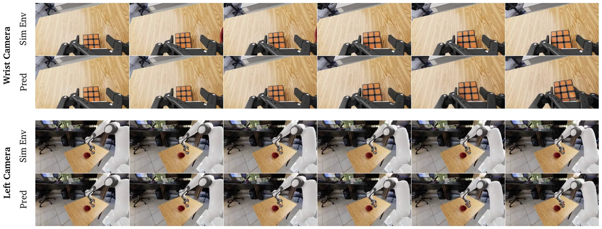
E.2 的增量 9.28 − 8.51 = 0.77、9.63 − 8.51 = 1.12、9.81 − 8.51 = 1.30；VQ 极差 13.03 − 12.84 = 0.19，“0.2 以内”成立。E.3 两种模式“有音频”都高 0.5 总分，但 T2V 的质量分低 0.2，提升全来自领域分。E.4 的 72% 见上。
每题“是 / 否 / 不清楚”，“不清楚”算“否”（留在分母、不进分子）。
模型分按所有（视频，问题）观测等权，不是先算每段再平均。两人独立标，一致即采纳，分歧交质检。题库按“低方差、真实视频接近满分”迭代；真实视频目前 T2V 93.6、I2V 94.4。
| 表 32 · T2V | 总 | 语义 | 物理定律 | 几何 | 视觉完整 | 常识 | 驾驶 | 机器人 | 工业 | 人类 | 物理 | 其他 |
|---|---|---|---|---|---|---|---|---|---|---|---|---|
| 真实视频 | 93.6 | 95.0 | 90.5 | 94.1 | 94.8 | 92.0 | 93.7 | 94.9 | 94.4 | 93.2 | 93.1 | 93.6 |
| Cosmos3-Super | 89.3 | 92.4 | 85.4 | 86.6 | 93.7 | 89.5 | 87.7 | 88.4 | 89.4 | 88.6 | 91.5 | 93.0 |
| Cosmos3-Nano | 87.6 | 91.5 | 83.6 | 84.1 | 92.5 | 89.5 | 87.0 | 86.6 | 85.8 | 86.2 | 87.9 | 94.0 |
| Wan2.2-A14B | 88.2 | 92.1 | 83.4 | 85.6 | 92.6 | 87.8 | 84.9 | 83.7 | 91.1 | 89.9 | 87.5 | 93.4 |
| HunyuanVideo-1.5 | 86.5 | 88.4 | 81.8 | 83.6 | 93.6 | 88.3 | 81.0 | 81.3 | 88.0 | 87.9 | 87.4 | 93.3 |
| Wan2.1-14B | 84.0 | 87.7 | 77.1 | 78.5 | 92.7 | 85.3 | 79.1 | 78.2 | 87.0 | 85.1 | 85.8 | 90.7 |
| Wan2.2-5B | 80.8 | 86.9 | 73.8 | 73.6 | 89.9 | 83.4 | 73.5 | 76.0 | 84.4 | 81.3 | 82.8 | 87.9 |
| Cosmos-Predict2.5-14B | 82.1 | 88.1 | 74.6 | 75.8 | 90.7 | 81.3 | 84.4 | 76.8 | 82.4 | 81.3 | 84.5 | 90.2 |
| Cosmos-Predict2.5-2B | 81.8 | 88.1 | 74.0 | 75.1 | 90.6 | 81.5 | 81.8 | 79.5 | 82.7 | 80.3 | 82.7 | 89.8 |
| Veo-3.1 | 91.3 | 94.3 | 87.7 | 91.0 | 93.9 | 92.7 | 85.6 | 91.5 | 94.7 | 90.3 | 90.4 | 95.8 |
| Seedance-1.5-Pro | 90.0 | 91.2 | 88.4 | 89.8 | 92.8 | 90.5 | 83.6 | 89.0 | 92.9 | 90.7 | 91.4 | 91.7 |
| 表 33 · I2V | 总 | 语义 | 物理定律 | 几何 | 视觉完整 | 常识 | 驾驶 | 机器人 | 工业 | 人类 | 物理 | 其他 |
|---|---|---|---|---|---|---|---|---|---|---|---|---|
| 真实视频 | 94.4 | 94.8 | 93.2 | 95.1 | 95.4 | 94.2 | 96.0 | 94.9 | 93.4 | 92.1 | 96.3 | 98.1 |
| Cosmos3-Super | 89.6 | 90.3 | 87.5 | 87.0 | 94.2 | 90.7 | 86.2 | 91.1 | 89.6 | 87.1 | 91.5 | 94.8 |
| Cosmos3-Nano | 88.6 | 89.2 | 86.4 | 86.3 | 93.5 | 90.6 | 87.6 | 90.6 | 88.0 | 84.7 | 91.0 | 93.9 |
| Wan2.2-A14B | 88.4 | 88.6 | 86.0 | 85.7 | 93.5 | 90.1 | 84.7 | 84.8 | 92.0 | 86.5 | 91.9 | 92.5 |
| HunyuanVideo-1.5 | 85.6 | 87.1 | 80.8 | 83.0 | 92.5 | 90.0 | 81.7 | 77.2 | 89.6 | 85.2 | 89.5 | 91.8 |
| Wan2.1-14B | 83.9 | 85.0 | 80.2 | 80.6 | 91.2 | 88.1 | 76.8 | 74.8 | 89.9 | 84.3 | 85.8 | 93.2 |
| Wan2.2-5B | 80.4 | 83.4 | 74.6 | 75.7 | 89.5 | 86.1 | 74.3 | 68.6 | 88.4 | 79.6 | 84.8 | 90.5 |
| Cosmos-Predict2.5-14B | 83.0 | 85.0 | 77.9 | 77.5 | 92.4 | 88.1 | 85.2 | 78.4 | 83.0 | 78.5 | 84.8 | 93.2 |
| Cosmos-Predict2.5-2B | 82.6 | 86.1 | 77.3 | 78.2 | 90.2 | 85.6 | 86.0 | 79.0 | 85.6 | 77.1 | 85.1 | 92.4 |
| Veo-3.1 | 89.7 | 90.3 | 87.7 | 89.2 | 93.2 | 92.3 | 86.0 | 88.6 | 93.4 | 87.2 | 91.2 | 94.3 |
| Seedance-1.5-Pro | 87.6 | 87.7 | 85.4 | 86.5 | 91.8 | 89.5 | 82.9 | 85.7 | 90.6 | 85.7 | 90.6 | 93.0 |
附录正文的几条说法我逐格核过都成立：T2V 里 Super 在驾驶（87.7）和物理（91.5，Seedance 91.4）超过所有模型；I2V 里 Super 视觉完整 94.2、机器人 91.1、其他 94.8 第一，语义和 Veo 并列 90.3；Nano 驾驶 87.6 第一；Wan2.2-A14B 物理 91.9 第一。
按组列出贡献者（组内按姓氏字母序），以及致谢名单，第 113–117 页。arXiv 的作者列表是 NVIDIA 加 293 人。
代码是 cosmos-framework e40831f（2026-11-16，OpenMDW-1.1），另看了 HF 上三个基础模型的 config.json 和 safetensors 头。只读未运行。仓库有完整的训练（SFT、LoRA、蒸馏）、推理和多个后训练配方，但没有从零的大规模预训练脚本。
| 项目 | 论文 | 代码 / 配置 |
|---|---|---|
| MoT 层 | 每层两套 LN、注意力投影、FFN，从 VLM 初始化 | model/generator/mot/unified_mot.py；HF 权重里一套是 to_q/to_k/to_v/to_out + mlp，另一套是 add_q_proj…to_add_out + mlp_moe_gen |
| 联合注意力 | 式 (7)(8)，两路扁平变长注意力 | 配置 joint_attn_implementation="two_way" |
| 位置编码 | 3D MRoPE，间隔 15000，base 24 FPS | unified_3d_mrope_temporal_modality_margin=15000，base_fps=24，enable_fps_modulation=True，unified_3d_mrope_reset_spatial_ids=True |
| 视觉 VAE | Wan2.2-TI2V-5B，4 × 16 × 16 + patch 2 | wan2pt2/Wan2.2_VAE.pth，spatial_compression_factor=16，patch_spatial=2，state_ch=48（patch 后 192 维） |
| 动作投影 | 每域一对线性层，式 (1)(2) | DomainAwareLinear，32 域 × 64 维（读者注 2） |
| 训练噪声 | 视频 mode sampling，其余 logit-normal；shift 中训练 3/5/10 | train_time_video_distribution="waver"，其余 "logitnormal"；shift={"256":3,"480":5,"720":10}（读者注 8） |
| 动作损失 | × 10；动作沿用视觉日程 | action_loss_weight=10.0，independent_action_schedule=False |
| VAE 分块 | 68 / 24 / 12 帧 | encode_chunk_frames={"256":68,"480":24,"720":8}（读者注 11） |
| 打包长度 | 74,000 | Edge / Nano 基线 45,056；LIBERO 配方和 HF Nano 配置 74,000 |
| 激活检查点 | 选择性，保存注意力输出 | mode="selective"，save_ops_regex=["fmha"] |
| Edge 主干 | 2B，去 QK 归一化，ReLU² | Nemotron3DenseVLTextForCausalLM，qk_norm_for_text=False，hidden_act="relu2"（F.relu(x).square()），词表 131,072 |
| DROID 策略 | 32 步绝对关节位置，15 Hz，学习率 2e-4，动作层 lr × 5，重新初始化 | 文档：joint_pos 8 维、use_state、chunk 32、全局 batch 8,192；配方里 lr_multipliers 对 action2llm / llm2action / action_modality_embed 乘 5，keys_to_skip_loading 跳过这些层 |
| 推理采样 | 表 21 | 默认调度器 UniPC；DROID 服务端支持 --cfg-parallel 两卡；Edge-Policy-DROID 推荐 --guidance-interval 960 1001（只在最高噪声的几步用 CFG，论文没提） |
nano_model_config.py 的注释说“发布的 Cosmos3-Nano 检查点带有真正的（DROID 训练过的）动作头”；LIBERO 文档却说“基础 DCP 没有动作头”。不过两个策略配方都把动作层列在 keys_to_skip_loading 里，实际总是重新初始化，和论文 4.2.5 节一致，所以不影响复现。
用户在复现 LIBERO，这里把 docs/action_policy_libero_posttrain.md、configs/base/experiment/action/posttrain_config/action_policy_libero_nano.py、examples/toml/sft_config/action_policy_libero_10_nano.toml 和 simulation/libero/closed_loop_eval.py 里的关键设置列出来。论文本身只给了表 20 的四个数。
| 项 | 设置 |
|---|---|
| 初始化 | 公开的 nvidia/Cosmos3-Nano（转 DCP）；动作层重新初始化；生成塔 load_weights_from_pretrained=False（我的理解：只是不再从 VLM 拷一份初始化，权重仍来自 Cosmos3-Nano 检查点；未逐行核实） |
| 数据 | nvidia/LIBERO_LeRobot_v3，20 FPS；预设 A 只训 libero_10（论文表 20 的设置），预设 B 四个套件等比例混合（max_iter 5000） |
| 动作 | 逐帧相对位姿 rot6d，10 维（位置 3 + rot6d 6 + 夹爪 1），quantile_rot 归一化；域编号 5；chunk 16（20 Hz 下 0.8 秒），模式 "wam"（视频和动作一起出） |
| 图像 | 第三人称 + 腕部各 256 × 256，拼成 256 × 512，再落到 192 × 320 的模型画布（256p 的 16:9 档）；视频长度 encode_exact_durations=[17, 61, 73] |
| 优化 | FusedAdam，lr 5e-5，β (0.9, 0.99)，wd 0.05，裁剪 1.0；动作层 lr × 5；LambdaLinear，预热 500，周期 16000；EMA power |
| 规模 | HSDP 2 × 8 = 16 卡，每卡 128 样本，全局 batch 2,048；max_iter 2000（约 1500 步达峰），每 500 步存档；损失缩放 10；打包 74,000 token |
| 评测 | 服务端默认 30 步去噪、guidance 1；客户端每任务 50 次，libero_10 最多 520 步，默认用 LIBERO 自带的固定初始状态；夹爪输出 [0, 1]，客户端用 1 − 2g 换成环境的 [−1, 1]；仿真画面要先旋转 180° |
和用户手上的 OpenWAM 设置有几处本质不同，不能直接比分数：只训和测 libero_10 一个套件；动作是 10 维相对位姿 rot6d 而不是 LIBERO 环境原生的 7 维 OSC 增量（客户端转换回去）；数据是 NVIDIA 自己转的 20 FPS LeRobot 版，未核实是否和 OpenWAM / MolmoAct2 用的 OpenVLA 过滤版（1,693 回合）相同。OpenWAM 那边的 LIBERO 协议见 OpenWAM 问 1。
结论：OpenWAM 论文没有用 Cosmos 3 做任何实验；代码完整支持 Cosmos3-Edge 作为视频骨干，并发布了一个用它在 RoboTwin2.0 上训练的检查点，但论文图 6 的骨干对比只有 Wan2.1-VACE-1.3B、Cosmos-Predict2.5-2B、Wan2.2-TI2V-5B、Wan2.1-I2V-14B 四个（91.64 是 Cosmos-Predict2.5-2B 的数）。
| 问题 | 答案和出处 |
|---|---|
| 论文里有没有 Cosmos 3？ | 只出现两次：图 2 的骨干列表和 §3.1 的“支持五个视频骨干……Cosmos3-Edge-4B”。§4.1.1 和图 6 只比了四个，grep 全文没有 Cosmos 3 的分数 |
| 用的哪个尺寸？ | Edge（3.86B，“4B”）。configs/model/video_backbone/cosmos3_edge.yaml，model_path 指向 diffusers 格式的 nvidia/Cosmos3-Edge（transformer/ + vae/ + text_tokenizer/，下载约 9.2 GB） |
| 结构参数 | pipeline_builder.py 硬编码：dim 2048、28 层、16 头、头维 128、KV 8 头、FFN 9216、relu2、latent_channel 48、patch 2（patch_latent_dim 192）、rope_axes_dim [24, 20, 20]、rope_theta 1e8、margin 15000、base_fps 24、vocab 131072，和 HF config 一致 |
| VAE | Wan2.2 VAE（AutoencoderKLWan）：时间 4、空间 16、48 通道、因果；backbone 常量 _COSMOS3_TEMPORAL_COMPRESSION=4、_COSMOS3_SPATIAL_COMPRESSION=16、_COSMOS3_DIT_PATCH_SIZE=(1,2,2)，和 OpenWAM 默认的 Wan2.2-TI2V-5B 同一个 VAE（见 Wan 页），所以隐空间可以直接对比 |
| shift | shift_video: 5.0，注释“NVIDIA 按分辨率的训练 shift {256: 3, 480: 5, 720: 10}，5.0 对应 480p”。这是论文中训练的值（预训练 480p 是 3），也是论文表 21 里动力学和策略模式的推理 shift；训练和部署共用这一个值 |
| 调度器 | 不用模型自带的 UniPC，而是 OpenWAM 自己的平移流 Euler 网格（cosmos3/scheduler.py 继承 Predict2.5 的适配器）；注释说 diffusers 当时的 UniPC 在 karras σ 下会忽略原生线性流网格（diffusers PR #14272），未核实 |
| 文本 | 没有外部文本编码器：提示由 Cosmos 3 自己的理解塔（Nemotron 主干）处理，freeze_und: true，理解塔在 no_grad 下跑一次并缓存每层给生成塔用的 K / V——正是论文 5.3 节的“理解塔缓存”；理解塔最后一层 2048 维隐状态当作动作流的 context（text_dim=2048）。提示模板沿用原生管线：附加“视频长 X 秒、Y FPS”一句，fps: 24.0 是假设值 |
| Cosmos 3 自己的动作头 | 不用。action_proj_in/out、audio_proj_* 和模态嵌入保留但冻结；动作由 OpenWAM 的 ActionDiT 或共享主干负责；lm_head（268M）丢掉 |
| 支持的架构 | dual_system（joint_cross_attn、joint_self_attn、idm）、single_system（vanilla、moe）、tri_system；注意力掩码：生成塔视频流在 OpenWAM 里设成 "bidirectional"，和 Cosmos 3 生成塔的全注意力一致 |
| 发布的检查点 | download_openwam_checkpoints.py 的 “OpenWAM_Study_Video_Backbone” 组里有 robotwin_dual_system_joint_self_attention_cosmos3（25.6 GB），和另外四个骨干并列；它的成绩论文和 README 都没报 |
| vendored 代码 | cosmos3/_vendor/transformer_cosmos3.py 取自 diffusers @6ad3573，因为当时 PyPI 版还不支持 Edge（relu²、Nemotron RMSNorm、k_norm_und_for_gen）；Apache-2.0 头保留 |
(1) OpenWAM 冻结的“und 通路”就是 Cosmos 3 的理解塔，可训练的是生成塔，和 Cosmos 3 自己“生成塔训练时理解塔冻结”的做法相同；Edge 生成塔一侧可训练参数约 1.41B（层）+ 小的投影和时间嵌入，和 Wan2.2-TI2V-5B 的 5.0B 相比小很多。(2) OpenWAM 的批里文本长度不一，代码把所有样本的视觉时间起点统一成“批内最长文本 + 15000”，原生是每个样本自己的文本长度；在 15000 的间隔下只差几个位置，B = 1（部署）时完全一致。(3) OpenWAM 默认 Wan2.2-TI2V-5B 也用 Wan2.2 VAE，所以换成 Cosmos3-Edge 时编码器不变、只换主干，是一个干净的“骨干”对照——可惜论文没有报这组数。
OpenWAM 一类 WAM 是“视频生成模型 + 动作流”，目标只有一个：给观测和指令，同时出未来视频和动作。Cosmos 3 的生成塔在结构上也能这样做（策略模式），但它同时还是 VLM（理解塔单独用）、文生图、音视频生成、可控迁移、正向和逆向动力学。代价是：主干大（Edge 已经 3.86B）、动作只是中训练里 25% 的数据流、动作头每个实体单独一对线性层。对机器人用户来说，它更像一个“预先学过很多动作域的视频-动作初始化”，表 20 的 MT-init 对 PT-init 就是在量化这一点。
VAE 一样（Wan2.2 VAE，4 × 16 × 16，48 通道），patch 也是 2 × 2，所以每个 token 都覆盖 4 帧 × 32 × 32 像素，同一段视频的视频 token 数相同。不同在于：Cosmos 3 序列前面还有文本（理解塔），视频位置用 3D MRoPE 加真实时间缩放；Wan2.2 用交叉注意力读 umT5 文本、3D RoPE 按帧号。去噪目标都是速度 ε − x₀，但 Cosmos 3 的 σ 方向是“σ = 1 为噪声”。
以下各条都是本页加的核算或对照，不属于论文内容。按出现顺序排列，点编号跳到对应位置。
另外：附录 C.7 正文说 SDG-All 的质量分最好，但表 26 里 RobotSim 的 72.72 更高（附录 C 折叠块末尾）。
论文没写、我也没找到的：生成塔预训练和中训练的总步数和全局 batch；理解塔预训练的 batch；Edge 的生成塔怎么训（报告只说“稍后发布”，只有附录 E.4 一个 Edge 实验）；RoboLab 三档的任务数；各合成集在中训练里的具体比例；DROID 策略的训练步数。
文中提到的数据集、基准、代码和权重。链接在 2026 年 11 月 16 日用脚本检查过，除注明的以外都返回 200。
| 名称 | 是什么 | 主页 | 论文 |
|---|---|---|---|
| Cosmos 3 | 本文 | HF 合集 · cosmos-framework | 2606.02800 |
| DROID | 真实机器人数据集；策略和正向动力学后训练 | droid-dataset.github.io | 2403.12945 |
| LIBERO | 仿真操作基准；表 20 的新实体适应 | libero-project.github.io | 2306.03310 |
| LIBERO_LeRobot_v3 | 官方 LIBERO 配方用的 20 FPS 数据 | huggingface.co/datasets/nvidia | — |
| RoboArena | 真实世界分布式策略评测 | robo-arena.github.io | 2506.18123 |
| RoboLab | 仿真策略基准，120 个任务（表 19） | 未找到公开主页 | Yang 等，RSS 2026 |
| MolmoSpaces | 仿真泛化基准 | 见论文 | 2602.11337 |
| PAI-Bench | 物理 AI 视频生成（-G）和迁移（-C）基准 | 见论文 | 2512.01989 |
| Physics-IQ | 物理理解视频基准（表 13） | physics-iq.github.io | 2501.09038 |
| UniGenBench | 文生图语义基准（表 11） | 见论文 | 2510.18701 |
| VideoPhy-2 | 物理常识视频数据和基准 | videophy2.github.io | 2503.06800 |
| VLMEvalKit | 理解塔评测框架 | github.com/open-compass | 2407.11691 |
| AgiBot World | 机器人数据（表 4）、PAIBench-C 片段 | agibot-world.com | 2503.06669 |
| BEHAVIOR-1K | 长程规划 SFT 数据 | behavior.stanford.edu | 2403.09227 |
| Ego-Exo4D | PAIBench-C 第一人称片段 | ego-exo4d-data.org | 2311.18259 |
| PushT | 附录 E.4 的动作模式消融 | diffusion-policy.cs.columbia.edu | 2303.04137 |
| RoboTwin 2.0 | OpenWAM 发布 Cosmos3 检查点的基准 | robotwin-platform.github.io | 2506.18088 |
| Cosmos3-Edge | OpenWAM 支持的尺寸 | huggingface.co/nvidia | — |